Рацион на неделю рекомендации по питанию НЦСМ ФМБА России
Пищевая ценность рекомендуемого рациона
| Калорийность | 3199 кКал | 100% |
|---|---|---|
| Белки | 132 г | 104% |
| Валин | 5.93 г | 351% |
| Гистидин | 3.41 г | 525% |
| Изолейцин | 4.96 г | 382% |
| Лейцин | 8.91 г | 351% |
| Лизин | 8.36 г | 429% |
| Метионин | 2.52 г | 388% |
| Треонин | 4.63 г | 477% |
| Триптофан | 1.75 г | 673% |
| Фенилаланин | 4.98 г | 348% |
| Цистеин | 1.49 г | 122% |
| Жиры | 86 г | 97% |
| Омега-3 | 1.48 г | 148% |
| Омега-6 | 8.52 г | 60% |
| Омега-9 | 24 г | 135% |
| Насыщенные жирные кислоты | 28 г | 92% |
| Углеводы | 461 г | 96% |
| Моно- и дисахариды | 221 г | 74% |
| Крахмал | 120 г | 100% |
| Клетчатка | 48 г | 190% |
| Прочее | ||
|---|---|---|
| Вода | 2513 г | 99% |
| Холестерин | 405 мг | 81% |
| Пурины | 533 мг | 89% |
| Щавелевая кислота | 287 мг | 72% |
| Витамины | ||
|---|---|---|
| Витамин A | 1418 мкг | 177% |
| Бета-каротин | 7.93 мг | 159% |
| Витамин В1 | 1.6 мг | 107% |
| Витамин В2 | 2.75 мг | 153% |
| Витамин В5 | 8.45 мг | 169% |
| Витамин В6 | 4.17 мг | 209% |
| Витамин В9 | 353 мкг | 88% |
| Витамин В12 | 12 мкг | 390% |
| Витамин С | 236 мг | 236% |
| Витамин D | 6.93 мкг | 46% |
| Витамин E | 18 мг | 121% |
| Витамин K | 167 мкг | 140% |
| Минералы | ||
|---|---|---|
| Калий | 6540 мг | 262% |
| Кальций | 1501 мг | 150% |
| Кремний | 394 мг | 1312% |
| Магний | 665 мг | 158% |
| Натрий | 4476 мг | 344% |
| Сера | 1131 мг | 226% |
| Фосфор | 2085 мг | 298% |
| Хлор | 4977 мг | 216% |
| Ванадий | 506 мкг | 3375% |
| Железо | 27 мг | 148% |
| Йод | 197 мкг | 131% |
| Кобальт | 62 мкг | 619% |
| Марганец | 7.67 мг | 384% |
| Медь | 3682 мкг | 368% |
| Молибден | 151 мкг | 215% |
| Селен | 143 мкг | 260% |
| Хром | 127 мкг | 318% |
| Цинк | 15 мг | 129% |
Ниже вам представлены наглядные диаграммы. Они показывают соотношение в рекомендуемом рационе важнейших для здоровья веществ. Это важно для укрепления вашего здоровья, лечения или профилактики некоторых заболеваний. Для подробных разъяснений обратитесь к специалисту.
Состав углеводов
| 42% | Простые сахара | 221 г |
| 23% | Крахмал | 120 г |
| 9% | Клетчатка | 48 г |
| 26% | Прочие сложные углеводы | 144 г |
Соотношение Омега-3/Омега-6
| 15% | Омега-3 | 1.48 г |
| 85% | Омега-6 | 8.52 г |
| 1/6 | Омега-3/Омега-6 |
Ваш персональный план питания
| Продукт/блюдо | Кол-во | Вес | ккал | БЖУ | Рецепт |
|---|---|---|---|---|---|
| Сыр м.д.ж. 30% в сухом в-ве | 10 г | 10 г | 25 | 3/1/0 | - |
| Хлеб из цельного зерна | 2 куска | 40 г | 101 | 5/1/15 | - |
| Коровье молоко, 3,2% жирности пастеризованное | 1 стакан 200 мл. | 200 мл | 120 | 6/6/9 | - |
| Кофе, капучино | 200 г | 200 мл | 62 | 3/3/5 | - |
| Мюсли | 100 г | 100 г | 325 | 8/3/72 | - |
| Продукт/блюдо | Кол-во | Вес | ккал | БЖУ | Рецепт |
|---|---|---|---|---|---|
| Тыквенный суп-пюре (без соли) | 200 г | 200 г | 59 | 2/3/6 | - |
| Овощи, тушенные без масла | 150 г | 150 г | 56 | 2/1/11 | - |
| Говядина с овощами | 120 г | 120 г | 151 | 15/7/5 | - |
| Компот из сухофруктов | 300 г | 300 г | 191 | 2/0/46 | - |
| Картофель отварной | 200 г | 200 г | 332 | 5/16/43 | - |
| Подсолнечное масло | 1 чайная ложка | 5 мл | 45 | 0/5/0 | - |
| Продукт/блюдо | Кол-во | Вес | ккал | БЖУ | Рецепт |
|---|---|---|---|---|---|
| мюсли батончик | 100 г | 100 г | 282 | 9/10/43 | - |
| Яблоко | 1 шт. | 100 г | 47 | 0/0/10 | - |
| Клубничное желе | 200 г | 200 г | 217 | 3/1/49 | - |
| Йогурт, 1% жирности фруктовый | 1 стакан 200 мл. | 200 г | 204 | 9/2/38 | - |
| Продукт/блюдо | Кол-во | Вес | ккал | БЖУ | Рецепт |
|---|---|---|---|---|---|
| Рис отварной | 200 г | 200 г | 259 | 5/0/57 | - |
| Котлеты рубленые | 120 г | 120 г | 180 | 33/5/1 | - |
| Овощной салат | 50 г | 50 г | 66 | 1/6/2 | - |
| Апельсиновый сок | 1 стакан 250 мл. | 300 мл | 135 | 2/1/31 | - |
| Подсолнечное масло | 1 чайная ложка | 5 мл | 45 | 0/5/0 | - |
| Продукт/блюдо | Кол-во | Вес | ккал | БЖУ | Рецепт |
|---|---|---|---|---|---|
| Ряженка, 2,5% жирности | 1 стакан 250 мл. | 250 мл | 135 | 7/6/11 | - |
| Крекеры с отрубями | 50 г | 50 г | 208 | 5/7/32 | - |
Итого за день:
| Продукт/блюдо | Кол-во | Вес | ккал | БЖУ | Рецепт |
|---|---|---|---|---|---|
| Омлет на молоке | 70 г | 70 г | 96 | 7/7/1 | - |
| Миндаль, жареный | 10 г | 10 г | 64 | 2/6/1 | - |
| Икра красная (кеты) зернистая, соленая | 20 г | 20 г | 50 | 6/3/0 | - |
| Масло сливочное 82,5% жирности, традиционное (в т.ч. Вологодское) | 10 г | 10 г | 75 | 0/8/0 | - |
| Кофе, капучино | 200 г | 200 мл | 62 | 3/3/5 | - |
| Хлеб из цельнозерновой муки | 60 г | 60 г | 153 | 5/2/28 | - |
| Продукт/блюдо | Кол-во | Вес | ккал | БЖУ | Рецепт |
|---|---|---|---|---|---|
| Чечевичный суп-пюре | 200 г | 200 г | 99 | 6/0/15 | - |
| Булгур с овощами | 200 г | 200 г | 327 | 9/9/48 | - |
| Телятина тушеная | 100 г | 100 г | 153 | 31/3/0 | - |
| Вишневый кисель с корицей | 300 г | 300 г | 160 | 2/0/36 | - |
| Салат из рукколы, сладкого перца и кунжута | 100 г | 100 г | 135 | 3/12/4 | - |
| Оливковое масло | 1 чайная ложка | 5 мл | 45 | 0/5/0 | - |
| Продукт/блюдо | Кол-во | Вес | ккал | БЖУ | Рецепт |
|---|---|---|---|---|---|
| Банан | 1.5 шт. | 200 г | 178 | 2/1/40 | - |
| Яблоко | 1.5 шт. | 200 г | 94 | 1/1/20 | - |
| мюсли батончик | 100 г | 100 г | 282 | 9/10/43 | - |
| Ананасовый сок | 1 стакан 200 мл. | 200 мл | 106 | 1/0/25 | - |
| Продукт/блюдо | Кол-во | Вес | ккал | БЖУ | Рецепт |
|---|---|---|---|---|---|
| Картофельное пюре (ФИЦ Питания) | 200 г | 200 г | 196 | 6/3/37 | - |
| Свекла отварная (ФИЦ Питания) | 100 г | 100 г | 52 | 2/0/11 | - |
| Семга запеченная | 120 г | 120 г | 184 | 24/9/2 | - |
| Компот из вишни | 300 г | 300 мл | 171 | 1/0/41 | - |
| Продукт/блюдо | Кол-во | Вес | ккал | БЖУ | Рецепт |
|---|---|---|---|---|---|
| Кефир 3,2% жирности | 1 стакан 200 мл. | 200 мл | 118 | 6/6/8 | - |
| Пастила Белевская | 0 г | 100 г | 312 | 3/0/74 | - |
Итого за день:
| Продукт/блюдо | Кол-во | Вес | ккал | БЖУ | Рецепт |
|---|---|---|---|---|---|
| Сырники творожные запеченные | 120 г | 120 г | 255 | 23/8/21 | - |
| Варенье из груши | 2 чайные ложки | 30 г | 82 | 0/0/21 | - |
| Кофе, капучино | 200 г | 200 мл | 62 | 3/3/5 | - |
| Куриный ролл в тортилье | 180 г | 180 г | 272 | 25/8/26 | - |
| Фруктовый салат, (яблоко, груша, апельсин, киви) | 89 г | 89 г | 47 | 1/0/9 | - |
| Сметана, 10% жирности | 1 столовая ложка | 20 г | 24 | 1/2/1 | - |
| Продукт/блюдо | Кол-во | Вес | ккал | БЖУ | Рецепт |
|---|---|---|---|---|---|
| Суп куриный с лапшой | 200 г | 200 г | 144 | 6/4/21 | - |
| Салат греческий | 70 г | 70 г | 96 | 3/8/3 | - |
| Каша гречневая рассыпчатая | 200 г | 200 г | 195 | 7/4/31 | - |
| Биточки из индейки | 100 г | 100 г | 196 | 19/6/15 | - |
| Компот из смеси сухофруктов | 0 г | 300 мл | 167 | 1/0/44 | - |
| Продукт/блюдо | Кол-во | Вес | ккал | БЖУ | Рецепт |
|---|---|---|---|---|---|
| Банан | 1.5 шт. | 200 г | 178 | 2/1/40 | - |
| Булочка с изюмом печеная (ФИЦ Питания) | 50 г | 50 г | 147 | 4/5/23 | - |
| Кисель из клюквы | 300 г | 300 г | 182 | 2/0/43 | - |
| Продукт/блюдо | Кол-во | Вес | ккал | БЖУ | Рецепт |
|---|---|---|---|---|---|
| Рис отварной рассыпчатый (ФИЦ Питания) | 200 г | 200 г | 207 | 4/4/38 | - |
| Фасоль, стручковая зеленая | 0.5 стакана 200 мл. | 50 г | 16 | 1/0/2 | - |
| Говядина отварная (ФИЦ Питания) | 100 г | 100 г | 241 | 28/14/1 | - |
| Сок из яблок | 1.5 стакана 200 мл. | 300 мл | 138 | 2/0/30 | - |
| Подсолнечное масло | 1 чайная ложка | 5 мл | 45 | 0/5/0 | - |
| Свекла, вареная | 100 г | 100 г | 44 | 2/0/8 | - |
| Продукт/блюдо | Кол-во | Вес | ккал | БЖУ | Рецепт |
|---|---|---|---|---|---|
| Ряженка, 1% жирности | 1 стакан 250 мл. | 250 мл | 100 | 8/3/11 | - |
| Крекеры с отрубями | 50 г | 50 г | 208 | 5/7/32 | - |
| Малина | 1.5 стакана 200 мл. | 200 г | 92 | 2/1/17 | - |
Итого за день:
| Продукт/блюдо | Кол-во | Вес | ккал | БЖУ | Рецепт |
|---|---|---|---|---|---|
| Хлеб из цельного зерна | 2 куска | 40 г | 101 | 5/1/15 | - |
| Лосось, атлантический (семга) | 20 г | 20 г | 31 | 4/2/0 | - |
| Скрембл с творожным сыром и зеленым луком | 100 г | 100 г | 207 | 11/14/9 | - |
| Каша рисовая на молоке | 300 г | 300 г | 473 | 13/4/94 | - |
| Кофе, капучино | 200 г | 200 мл | 62 | 3/3/5 | - |
| Черника | 0.5 стакана 200 мл. | 100 г | 44 | 1/1/8 | - |
| Продукт/блюдо | Кол-во | Вес | ккал | БЖУ | Рецепт |
|---|---|---|---|---|---|
| Щи из свежей капусты на мясном бульоне со сметаной (ФИЦ Питания) | 250 г | 250 г | 98 | 6/3/11 | - |
| Макароны, отварные | 200 г | 200 г | 265 | 9/1/55 | - |
| Компот из сухофруктов | 300 г | 300 г | 191 | 2/0/46 | - |
| Томат с моцареллой | 50 г | 50 г | 79 | 7/5/2 | - |
| Холодец из филе индейки | 50 г | 50 г | 101 | 15/3/2 | - |
| Подсолнечное масло | 1 чайная ложка | 5 мл | 45 | 0/5/0 | - |
| Сёмга запеченная | 120 г | 120 г | 230 | 30/12/0 | - |
| Продукт/блюдо | Кол-во | Вес | ккал | БЖУ | Рецепт |
|---|---|---|---|---|---|
| Яблоко | 1.5 шт. | 200 г | 94 | 1/1/20 | - |
| Зефир | 50 г | 50 г | 163 | 0/0/40 | - |
| Ананасовый сок | 1 стакан 200 мл. | 200 мл | 106 | 1/0/25 | - |
| Быстрое овсяное печенье | 50 г | 50 г | 76 | 3/3/10 | - |
| Продукт/блюдо | Кол-во | Вес | ккал | БЖУ | Рецепт |
|---|---|---|---|---|---|
| Рис отварной | 200 г | 200 г | 261 | 4/7/43 | - |
| Капуста белокочанная тушеная (ФИЦ Питания) | 100 г | 100 г | 53 | 2/3/5 | - |
| Подсолнечное масло | 1 чайная ложка | 5 мл | 45 | 0/5/0 | - |
| Котлеты из рубленой индейки | 100 г | 100 г | 155 | 27/4/2 | - |
| Сок вишневый без сахара терпкий | 200 г | 200 г | 92 | 1/0/20 | - |
| Продукт/блюдо | Кол-во | Вес | ккал | БЖУ | Рецепт |
|---|---|---|---|---|---|
| Пастила Белевская | 0 г | 100 г | 312 | 3/0/74 | - |
| Кефир 1% жирности | 1 стакан 200 мл. | 200 мл | 80 | 6/2/8 | - |
Итого за день:
| Продукт/блюдо | Кол-во | Вес | ккал | БЖУ | Рецепт |
|---|---|---|---|---|---|
| Варенье из яблок | 1 столовая ложка | 50 г | 133 | 0/0/34 | - |
| Творог, 2% жирности | 6 столовых ложек | 100 г | 114 | 20/2/3 | - |
| Мюсли | 100 г | 100 г | 325 | 8/3/72 | - |
| Кофе, капучино | 200 г | 200 мл | 62 | 3/3/5 | - |
| Чернослив (слива сушеная) | 2 столовые ложки | 50 г | 128 | 1/0/29 | - |
| Коровье молоко, 1,5% жирности пастеризованное | 1 стакан 200 мл. | 200 мл | 90 | 6/3/10 | - |
| Манго | 0.5 шт. | 100 г | 60 | 1/0/13 | - |
| Продукт/блюдо | Кол-во | Вес | ккал | БЖУ | Рецепт |
|---|---|---|---|---|---|
| Суп «Ассорти» | 250 г | 250 г | 194 | 10/12/11 | - |
| Салат из капусты | 90 г | 90 г | 106 | 1/7/10 | - |
| Тушеная печень | 80 г | 80 г | 108 | 16/3/3 | - |
| Картофель отварной | 200 г | 200 г | 332 | 5/16/43 | - |
| Вишневый кисель с корицей | 300 г | 300 г | 160 | 2/0/36 | - |
| Продукт/блюдо | Кол-во | Вес | ккал | БЖУ | Рецепт |
|---|---|---|---|---|---|
| Банан | 1.5 шт. | 200 г | 178 | 2/1/40 | - |
| Желатиновое желе низкокалорийное, на воде | 200 г | 200 г | 120 | 2/0/28 | - |
| Апельсиновый сок | 1 стакан 250 мл. | 200 мл | 90 | 1/0/20 | - |
| Батончик зерновой с цукатами (ВкусВилл) | 0 г | 100 г | 332 | 8/4/60 | - |
| Продукт/блюдо | Кол-во | Вес | ккал | БЖУ | Рецепт |
|---|---|---|---|---|---|
| Булгур, приготовленный | 200 г | 200 г | 164 | 6/1/30 | - |
| Курина грудка (филе), запеченная без масла | 100 г | 100 г | 138 | 23/5/1 | - |
| Салат из капусты и моркови | 150 г | 150 г | 134 | 2/10/7 | - |
| Масло из виноградных косточек | 1 чайная ложка | 5 мл | 44 | 0/5/0 | - |
| Продукт/блюдо | Кол-во | Вес | ккал | БЖУ | Рецепт |
|---|---|---|---|---|---|
| Йогурт, 1,5% жирности плодово-ягодный | 1 стакан 250 мл. | 250 г | 225 | 10/4/36 | - |
| Ржаные крекеры с пряными травами | 50 г | 50 г | 120 | 4/6/10 | - |
Итого за день:
| Продукт/блюдо | Кол-во | Вес | ккал | БЖУ | Рецепт |
|---|---|---|---|---|---|
| Яйцо, куриное вареное вкрутую | 1 шт. | 40 г | 62 | 5/4/0 | - |
| Каша гречневая молочная без масла | 250 г | 250 г | 202 | 8/4/32 | - |
| Хлеб пшеничный | 1 шт. | 40 г | 110 | 4/2/17 | - |
| Сыр м.д.ж. 30% в сухом в-ве | 20 г | 20 г | 50 | 6/3/0 | - |
| Абрикосы, сушеные | 50 г | 50 г | 121 | 2/0/28 | - |
| Кофе, капучино | 200 г | 200 мл | 62 | 3/3/5 | - |
| Виноград | 0.5 стакана 200 мл. | 100 г | 72 | 1/1/15 | - |
| Продукт/блюдо | Кол-во | Вес | ккал | БЖУ | Рецепт |
|---|---|---|---|---|---|
| Картофельное пюре (ФИЦ Питания) | 200 г | 200 г | 196 | 6/3/37 | - |
| Запеченная скумбрия | 100 г | 100 г | 186 | 17/12/1 | - |
| Суп, Рассольник домашний | 200 г | 200 г | 112 | 4/5/13 | - |
| Кисель из яблок | 300 г | 300 г | 353 | 1/0/85 | - |
| Продукт/блюдо | Кол-во | Вес | ккал | БЖУ | Рецепт |
|---|---|---|---|---|---|
| Овсяное печенье | 50 г | 50 г | 47 | 2/1/8 | - |
| Смузи (яблоко, морковь, ананас) со сливками | 300 г | 300 г | 171 | 2/5/27 | - |
| Груша | 1.5 шт. | 200 г | 116 | 1/1/21 | - |
| Продукт/блюдо | Кол-во | Вес | ккал | БЖУ | Рецепт |
|---|---|---|---|---|---|
| Паста в соусе песто с креветками | 300 г | 300 г | 679 | 53/28/51 | - |
| Салат из свежих помидоров с перцем | 82 г | 82 г | 70 | 1/6/3 | - |
| Компот из крыжовника и черной смородины | 300 г | 300 г | 178 | 1/0/41 | - |
| Вишня | 14.5 шт. | 100 г | 50 | 1/0/11 | - |
| Продукт/блюдо | Кол-во | Вес | ккал | БЖУ | Рецепт |
|---|---|---|---|---|---|
| Кефир 3,2% жирности | 1 стакан 250 мл. | 250 мл | 148 | 7/8/10 | - |
| Пастила Белевская | 0 г | 100 г | 312 | 3/0/74 | - |
Итого за день:
| Продукт/блюдо | Кол-во | Вес | ккал | БЖУ | Рецепт |
|---|---|---|---|---|---|
| Каша рисовая молочная без масла | 250 г | 250 г | 248 | 6/4/46 | - |
| Изюм, без косточек | 20 г | 20 г | 60 | 1/0/15 | - |
| Блины с творогом | 150 г | 150 г | 234 | 15/4/33 | - |
| Клубника | 4 столовые ложки | 100 г | 41 | 1/0/8 | - |
| Продукт/блюдо | Кол-во | Вес | ккал | БЖУ | Рецепт |
|---|---|---|---|---|---|
| Борщ | 250 г | 250 г | 181 | 12/11/9 | - |
| Хлеб ржано-пшеничный бородинский | 1.5 куска | 60 г | 121 | 4/1/24 | - |
| Тушеная говядина | 100 г | 100 г | 192 | 25/8/3 | - |
| Картофельное пюре | 200 г | 200 г | 291 | 6/14/36 | - |
| Компот вишневый | 300 г | 300 г | 212 | 1/0/51 | - |
| Свежий салат из огурцов и помидоров | 150 г | 150 г | 24 | 1/0/4 | - |
| Продукт/блюдо | Кол-во | Вес | ккал | БЖУ | Рецепт |
|---|---|---|---|---|---|
| Зеленый смузи с манго | 300 г | 300 г | 185 | 6/7/22 | - |
| Яблоко | 2.5 шт. | 300 г | 141 | 1/1/29 | - |
| Слоеные булочки с корицей и медом | 50 г | 50 г | 195 | 3/8/29 | - |
| Продукт/блюдо | Кол-во | Вес | ккал | БЖУ | Рецепт |
|---|---|---|---|---|---|
| Помидор (томат), грунтовый | 50 г | 50 г | 12 | 1/0/2 | - |
| Руккола | 10 г | 10 г | 3 | 0/0/0 | - |
| Огурец, парниковый | 50 г | 50 г | 6 | 0/0/1 | - |
| Рис отварной | 200 г | 200 г | 261 | 4/7/43 | - |
| Запеченный лосось под болгарским перцем и… | 120 г | 120 г | 238 | 17/17/3 | - |
| Продукт/блюдо | Кол-во | Вес | ккал | БЖУ | Рецепт |
|---|---|---|---|---|---|
| мюсли батончик | 50 г | 50 г | 141 | 4/5/21 | - |
| Ряженка, 1% жирности | 1 стакан 250 мл. | 250 мл | 100 | 8/3/11 | - |
Итого за день:
Для вашего удобства вес некоторых продуктов указан не только в граммах, но и в штуках. Если вы видите, что указано «1 шт.», то имеется в виду продукт средних размеров. Например, «яблоко 1 шт.» — это одно яблоко среднего размера. Но, например, размер картофелины или яйца может варьироваться в широких пределах. Так, в столбце «Количество» могут встречаться дробные величины. Например, 1.5 яйца или 0.5 картофелины. Поэтому, чтобы вам было удобно, для таких случаев мы рекомендуем ориентироваться на вес таких продуктов в граммах. Так вам не придётся разделять яйцо на части, а измерения в граммах всегда намного точнее. Эти же советы применимы к ингредиентам в рецептах и к продуктам для покупок.


Список продуктов для покупок
-
Базилик, свежий 31 г
Кабачок 171 г
Капуста, белокочанная 318 г
Картофель, сырой 1.78 кг
Лук зеленый (перо) 19 г
Лук порей 11 г
Лук, репчатый 202 г
Морковь 381 г
Огурец. грунтовый 125 г
Огурец, парниковый 50 г
Огурцы, маринованные с укропом 14 г
Пекинская капуста, вареная без соли 13 г
Перец сладкий, желтый 54 г
Перец сладкий, зеленый 19 г
Перец сладкий, красный 127 г
Петрушка (корень) 3 г
Петрушка, свежая 15 г
Помидор (томат) 352 г
Помидор (томат), грунтовый 68 г
Розмарин, свежий 1 г
Руккола 48 г
Свекла 174 г
Свекла, вареная 100 г
Тимьян, свежий 1 г
Тыква 128 г
Укроп, свежий 2 г
Чеснок, сырой 23 г
Шпинат, сырой 13 г
-
Авокадо 41 г
Ананас 118 г
Апельсин 25 г
Банан 665 г
Виноград 100 г
Вишня 341 г
Груша 225 г
Киви, свежее 25 г
Клубника 285 г
Крыжовник 44 г
Лимон 33 г
Малина 200 г
Манго 197 г
Оливки (чёрные), консервированные 1 шт.
Смородина, черная 44 г
Черника 100 г
Яблоко 1.05 кг
-
Булгур, сухой 123 г
Гречиха, зерно 86 г
Овсяная крупа (овес) 7 г
Овсяная крупа (овес), "Геркулес" хлопья 8 г
Рис белый, длиннозерный сухой 155 г
Рис белый, короткозерный сухой 222 г
Фасоль, стручковая зеленая 50 г
Чечевица 22 г
-
Макароны, сухие 97 г
Паста (пенне), сухая 62 г
Пшеничная мука, белая высшего сорта 71 г
Пшеничная мука цельнозерновая 44 г
Ржаная мука, обойная 22 г
-
Варенье из груши 30 г
Варенье из яблок 50 г
Зефир 50 г
Крекеры с отрубями 100 г
Панировочные сухари 10 г
Хлеб пшеничный 57 г
Хлеб из цельного зерна 101 г
Хлеб ржано-пшеничный бородинский 60 г
Пастила Белевская 300 г
Мексиканская лепешка (тортилья) 60 г
Батончик зерновой с цукатами (ВкусВилл) 100 г
-
Йогурт, 1% жирности фруктовый 200 мл
Йогурт, 1,5% жирности плодово-ягодный 250 мл
Масло сливочное 39 мл
Масло сливочное 72,5% жирности, крестьянское 29 мл
Масло сливочное 82,5% жирности, традиционное (в т.ч. Вологодское) 45 мл
Сливки, 10% жирности пастеризованные 28 мл
Сливки, 20% жирности пастеризованные 20 мл
Сметана, 10% жирности 20 мл
Сметана, 15% жирности 8 мл
Сметана, 20% жирности 8 мл
Сыр моцарелла, обезжиренный 21 мл
Сыр фета, м.д.ж. 48% в сух. в-ве 16 мл
Творожный сыр сливочный 16 мл
Творог, 2% жирности 146 мл
Творог, 5% жирности 97 мл
Яичный белок, куриный, сырой 25 г
Яичный желток, куриный 1 г
Яйцо, куриное 167 г
Яйцо, куриное вареное вкрутую 40 г
Сыр м.д.ж. 30% в сухом в-ве 30 мл
-
Говядина, отборная вырезка сырая 181 г
Говядина, 1 кат. 28 г
Говядина, 2 кат. 150 г
Грудка цыпленка-бройлера (курица) 117 г
Индейка 131 г
Индейка, белое мясо 110 г
Куриная грудка (филе, курица) 126 г
Курица, 1 кат. 56 г
Печень говяжья 80 г
Свинина, мясная 22 г
Телятина, 1 кат. 164 г
Куриная грудка (филе), запеченная без масла 90 г
-
Икра красная (кеты) зернистая, соленая 20 г
Креветка, приготовленная на пару 181 г
Лосось, атлантический (семга) 361 г
Скумбрия, атлантическая 110 г
-
Абрикосы, сушеные 50 г
Арахис, жареный 39 г
Грецкий орех 5 г
Изюм, без косточек 25 г
Кедровый орех, сушеный 16 г
Курага (абрикосы сушеные) 64 г
Миндаль, жареный 10 г
Чернослив (слива сушеная) 50 г
Яблоко, сушеное 55 г
-
Ананасовый сок 400 мл
Апельсиновый сок 500 мл
Вода 3.2 л
Кефир 1% жирности 200 мл
Кефир, 2,5% жирности 8 мл
Кефир 3,2% жирности 450 мл
Компот из вишни 300 мл
Коровье молоко, 1,5% жирности пастеризованное 436 мл
Коровье молоко, 2,5% жирности пастеризованное 240 мл
Коровье молоко, 3,2% жирности пастеризованное 417 мл
Ряженка, 2,5% жирности 250 мл
Ряженка, 1% жирности 500 мл
Соевое молоко, обогащенное 162 мл
Сок из лимона 4 мл
Сок из яблок 500 мл
Кофе, капучино 1.2 л
Компот из смеси сухофруктов 300 мл
-
Базилик, сушеный 6 г
Бульон, говяжий 333 г
Бульон, куриный 152 г
Ванилин 0 г
Гвоздика, молотая 0 г
Горчица, столовая 4 г
Дрожжи, прессованные 1 г
Желатин (порошок) 4 г
Желатиновое желе низкокалорийное, на воде 200 г
Картофельный крахмал 46 г
Клюква 33 г
Корица, молотая 8 г
Кукурузный крахмал 14 г
Кунжут 8 г
Лавровый лист 0 г
Масло из виноградных косточек 5 г
Мед, пчелиный 19 г
Оливковое масло 26 г
Орегано, сушеный 1 г
Перец душистый, молотый 2 г
Перец черный, молотый или горошек 8 г
Подсолнечное масло 45 г
Подсолнечное масло, высокоолеиновое (>70%) 49 г
Сахар, песок 312 г
Семена льна 0 г
Соевый соус 40 г
Соль поваренная пищевая 6 г
Соль, столовая йодированная 37 г
Тесто слоеное, пресное (пшеничная мука) 42 г
Тмин, семена 2 г
Паста, томатная 2 г
Уксус, бальзамический 1 г
Уксус, столовый 9% 5 г
Уксус, яблочный 4 г
Чеснок, порошок 1 г
Мюсли 330 г
Сахарная пудра 3 г

Рецепты
Тыквенный суп-пюре (без соли)
| Ингредиенты на 200 г готового блюда | Продукт | Кол-во | Вес |
|---|---|---|---|
| Тыква | 127.8 г | 127.8 г | |
| Сливки, 10% жирности пастеризованные | 2 столовые ложки | 27.8 г | |
| Лук, репчатый | 8.5 г | 8.3 г | |
| Перец душистый, молотый | 0.5 г | 0.6 г | |
| Петрушка, свежая | 5.5 г | 5.6 г | |
| Вода | 6 столовых ложек | 111.1 мл |
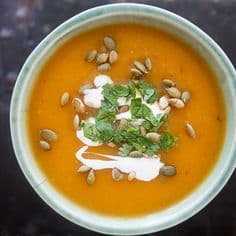
- 1. Разрезать тыкву, удалить с помощью столовой ложки семечки, разрезать тыкву на дольки, а семена промыть , высушить и обжарить на сухой сковороде.
- 2. В кипящую воду положить кусочки тыквы, лук. Варить до готовности - примерно 30 мин.
- 3. Добавить сливки. При помощи блендера довести до состояния пюре. Подавать присыпав тыквенными семечками, петрушкой и перцем по вкусу.
- 6. Приятного аппетита.
Овощи, тушенные без масла
| Ингредиенты на 150 г готового блюда | Продукт | Кол-во | Вес |
|---|---|---|---|
| Кабачок | 0.5 шт. | 171.2 г | |
| Морковь | 0.5 шт. | 25.7 г | |
| Лук, репчатый | 0.5 шт. | 25.7 г | |
| Петрушка, свежая | 1.5 г | 1.7 г | |
| Укроп, свежий | 1.5 г | 1.7 г | |
| Лук зеленый (перо) | 3.5 г | 3.4 г | |
| Вода | 17 г | 17.1 мл | |
| Соль, столовая йодированная | 0.5 г | 0.3 г | |
| Перец черный, молотый или горошек | 1.5 шт. | 0.2 г |
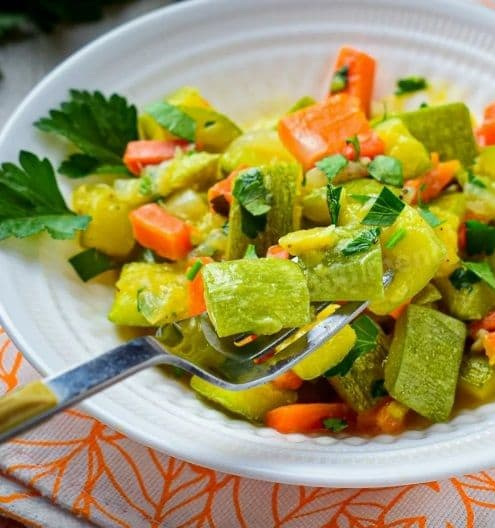
- 1. Овощи нашинковать, сложить в сотейник с толстым дном и залить водой.
- 2. Поставить на огонь. После закипания, убавить огонь и тушить 15-20 минут.
- 3. Посолить, поперчить во скусу.
Говядина с овощами
| Ингредиенты на 120 г готового блюда | Продукт | Кол-во | Вес |
|---|---|---|---|
| Говядина, отборная вырезка сырая | 63.3 г | 63.3 г | |
| Помидор (томат) | 0.5 шт. | 72.2 г | |
| Морковь | 19 г | 19 г | |
| Лук, репчатый | 0.5 шт. | 28.5 г | |
| Перец сладкий, желтый | 12.5 г | 12.7 г | |
| Соевый соус | 5.5 г | 5.7 г | |
| Сметана, 15% жирности | 3.5 г | 3.4 г | |
| Подсолнечное масло, высокоолеиновое (>70%) | 2 г | 2.2 мл |

- 1. Нарезать средними кусочками мясо, отправить на раскаленную сковороду, жарить около 20 мин, постоянно помешивая.
- 2. К мясу добавить лук и морковь.
- 3. Спустя мин 15 добавить болгарский перец и соевый соус.
- 4. Затем помидоры, солим, перчим, тушим около 10 мин.
- 5. В конце добавляем сметану, тушим еще 10 мин, добавляем воду в процессе, количество на ваше усмотрение.
Компот из сухофруктов
| Ингредиенты на 300 г готового блюда | Продукт | Кол-во | Вес |
|---|---|---|---|
| Вода | 1 стакан 250 мл. | 272.7 мл | |
| Курага (абрикосы сушеные) | 2.5 шт. | 30.3 г | |
| Сахар, песок | 4 чайные ложки | 30.3 г |
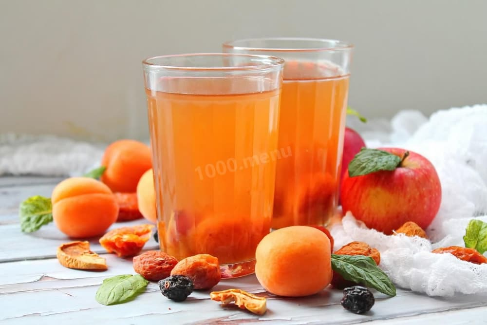
- Сухофрукты промыть, залить водой и довести до кипения, затем добавить сахар и варить 20 минут.Настоять и перед подачей процедить.
Картофель отварной
| Ингредиенты на 200 г готового блюда | Продукт | Кол-во | Вес |
|---|---|---|---|
| Картофель, сырой | 3.5 шт. | 347.4 г | |
| Масло сливочное 82,5% жирности, традиционное (в т.ч. Вологодское) | 17.5 г | 17.5 г |

- Картофель предварительно промыть, тщательно перебрать и очистить. Очищенный, промытый картофель залить горячей кипяченой водой (уровень воды должен быть на 1-1.5см выше уровня картофеля), добавить соль(при назначении врача) и варить при небольшом кипении 15-20 минут, закрыв посуду крышкой. Затем отвар слить, а посуду с готовым картофелем поставить на небольшой огонь на 1-2 минуты и, встряхивая, обсушить картофель.
мюсли батончик
| Ингредиенты на 100 г готового блюда | Продукт | Кол-во | Вес |
|---|---|---|---|
| Мюсли | 52.1 г | 52.1 г | |
| Яблоко | 0.5 шт. | 36.5 г | |
| Арахис, жареный | 15.5 г | 15.6 г |

- Мюсли батончик фруктово-орехово-зерновой
Клубничное желе
| Ингредиенты на 200 г готового блюда | Продукт | Кол-во | Вес |
|---|---|---|---|
| Сахар, песок | 1.5 столовые ложки | 37 г | |
| Клубника | 11 шт. | 185.2 г | |
| Желатин (порошок) | 1.5 г | 1.5 г | |
| Вода | 5.5 г | 5.3 мл |

- 1. В миске смешайте клубнику и сахар. Поставьте на водяную баню примерно на 30 минут, пока из клубники не выступит сок. Процедите через сито, не нажимая на ягоды, чтобы сироп не стам мутным.
- 2. Тем временем, в миске смешайте воду и желатин. Оставьте на 2 минуты.
- 3. Соедините желатин с теплым сиропом и размешивайте до полного растворения. Процедите.
- 4. Разлейте массу по формочкам и поставьте в холодильник примерно на 2,5 часа до полного застывания.
Рис отварной
| Ингредиенты на 200 г готового блюда | Продукт | Кол-во | Вес |
|---|---|---|---|
| Рис белый, короткозерный сухой | 0.5 стакана 250 мл. | 72.5 г | |
| Вода | 0.5 стакана 250 мл. | 144.9 мл |
- лаола
Котлеты рубленые
| Ингредиенты на 120 г готового блюда | Продукт | Кол-во | Вес |
|---|---|---|---|
| Перец черный, молотый или горошек | 8.5 шт. | 0.8 г | |
| Соль, столовая йодированная | 1 г | 0.8 г | |
| Подсолнечное масло, высокоолеиновое (>70%) | 0.5 чайные ложки | 2.5 мл | |
| Куриная грудка (филе, курица) | 0.5 шт. | 125.9 г | |
| Яичный белок, куриный, сырой | 25 г | 25.2 г |
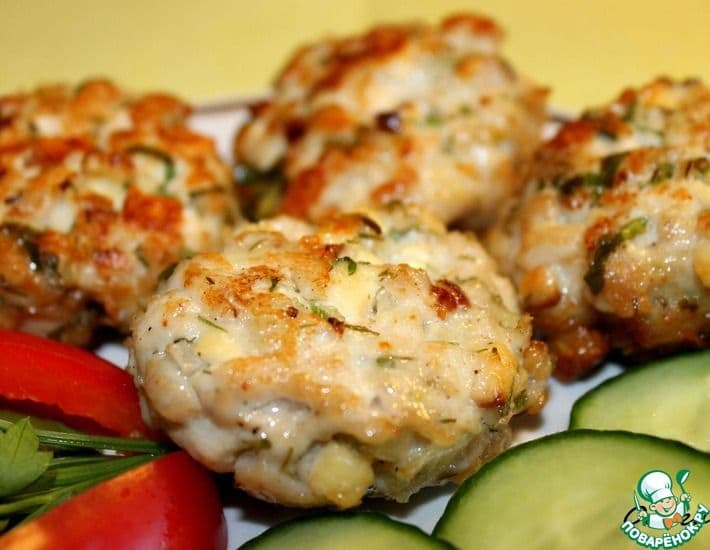
- мелко рубите мясо
- вбить белок яйца ,специи, зелень,перемешать .
- пожарить котлетки на пару капель масла.
Овощной салат
| Ингредиенты на 50 г готового блюда | Продукт | Кол-во | Вес |
|---|---|---|---|
| Пекинская капуста, вареная без соли | 13 г | 13.1 г | |
| Перец сладкий, желтый | 6.5 г | 6.6 г | |
| Перец сладкий, зеленый | 6.5 г | 6.6 г | |
| Перец сладкий, красный | 6.5 г | 6.6 г | |
| Огурец. грунтовый | 6.5 г | 6.6 г | |
| Морковь | 6.5 г | 6.6 г | |
| Оливковое масло | 0.5 чайные ложки | 2.6 мл | |
| Грецкий орех | 0.5 шт. | 5.3 г | |
| Сок из лимона | 0.5 чайные ложки | 2.4 мл | |
| Чеснок, сырой | 1 г | 0.9 г | |
| Соль, столовая йодированная | 0.5 г | 0.3 г |
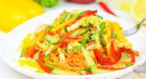
- Пекинскую капусту и перец нарезать, огурец и морковь натереть на крупной терке(образующийся сок слить). Все ингредиенты сложить в одну емкость и готовить заправку. В чашу блендера положить масло, сок лимона, орехи, чеснок и соль, все хорошенько взбить до однородной массы. Добавить заправку в салат, все хорошо перемешать и дать салату настояться.
Омлет на молоке
| Ингредиенты на 70 г готового блюда | Продукт | Кол-во | Вес |
|---|---|---|---|
| Яйцо, куриное | 1 шт. | 60.7 г | |
| Коровье молоко, 2,5% жирности пастеризованное | 23.5 г | 23.3 мл |
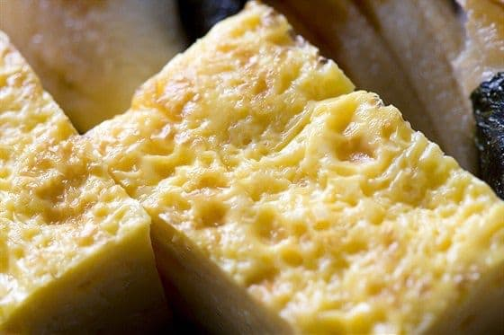
- Яйца, смешивают с молоком, добавляют соль( по назначению врача), слегка взбивают до тех пор, пока на поверхности не появится пена. Омлет запекают на противне, смазанном маслом с толстым дном, обеспечивающим постепенный равномерный прогрев яичной массы. Противень хорошо разогреть и вылить в него омлетную смесь слоем 2,5-3 см.
Хлеб из цельнозерновой муки
| Ингредиенты на 60 г готового блюда | Продукт | Кол-во | Вес |
|---|---|---|---|
| Сахар, песок | 3.5 г | 3.7 г | |
| Дрожжи, прессованные | 0.5 г | 0.3 г | |
| Соль, столовая йодированная | 0.5 г | 0.6 г | |
| Пшеничная мука цельнозерновая | 1 столовая ложка | 27.2 г | |
| Пшеничная мука, белая высшего сорта | 11 г | 11 г | |
| Оливковое масло | 1 г | 0.8 мл | |
| Вода | 18.5 г | 18.4 мл | |
| Семена льна | 0.5 г | 0.3 г |
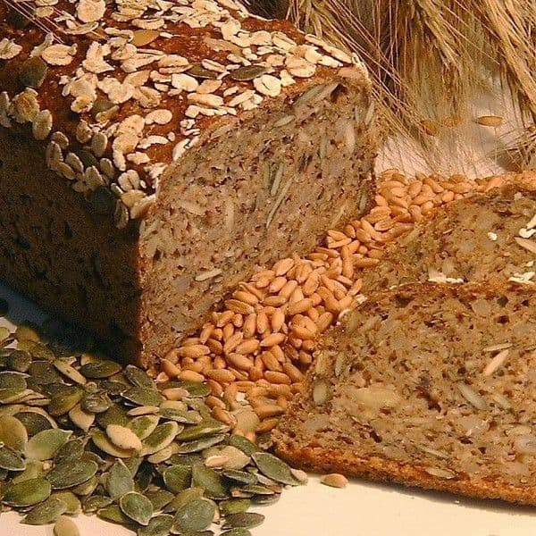
- 1. Развести дрожжи в теплой воде (35–37 градусов), добавить сахар, соль, оливковое масло, размешать.
- 2. В смесь добавлять муку и специи (семена), начинаем хорошо замешивать смесь до тех пор, пока она не станет достаточно крутой, чтобы ее затем можно было месить руками.
- 3. Готовое тесто смазываем маслом, накрываем и ставим в теплое место на 30 минут. За это время тестовая масса должна увеличиться в 2–3 раза.
- 4. Духовку прогреть до 180 градусов. Тесто выложить на противень с пергаментом (тесто можно разделить на два куска).
- 5. В разогретую духовку поставить на дно посуду с водой (нам нужен пар). Выпекать в середине духовки 15 мин, после вытащить посуду с водой, полуготовый хлеб обмакнуть сверху соленой водой (для корочки) и также выпекать примерно еще 15–20 минут.
- 6. Достать хлеб, накрыть полотенцем, 10–15 минут будет достаточно. После можно подавать.
Чечевичный суп-пюре
| Ингредиенты на 200 г готового блюда | Продукт | Кол-во | Вес |
|---|---|---|---|
| Вода | 6 столовых ложек | 112.4 мл | |
| Чечевица | 22.5 г | 22.5 г | |
| Помидор (томат) | 1 шт. | 89.9 г | |
| Чеснок, сырой | 5.5 г | 5.4 г |

- Промыть чечевицу и добавить ее в подсоленную кипящую воду, варить 25 мин.
- Нарезать томаты, почистить и выдавить чеснок.
- Через 25 мин добавить томаты с чесноком и специями к чечевице. Варить еще 10 мин. Готовый суп пюрировать блендером.
Булгур с овощами
| Ингредиенты на 200 г готового блюда | Продукт | Кол-во | Вес |
|---|---|---|---|
| Булгур, сухой | 4 столовые ложки | 74.9 г | |
| Перец сладкий, красный | 11 г | 11.2 г | |
| Морковь | 7.5 г | 7.5 г | |
| Подсолнечное масло, высокоолеиновое (>70%) | 1.5 чайные ложки | 7.5 мл | |
| Соль, столовая йодированная | 1 г | 0.8 г |

- Овощи режим кубиком 1/1 см, обжариваем в сковороде на масле до полуготовности . Булгур заливаем водой доводим кипения варим на среднем огне 10 мин, и оставляем на медленном еще 5 . Выключаем и оставляем минут на 5 под крышкой.
Телятина тушеная
| Ингредиенты на 100 г готового блюда | Продукт | Кол-во | Вес |
|---|---|---|---|
| Телятина, 1 кат. | 163.9 г | 163.9 г |

- Телятину разделать на кусочки, тушить.
Вишневый кисель с корицей
| Ингредиенты на 300 г готового блюда | Продукт | Кол-во | Вес |
|---|---|---|---|
| Вишня | 10 шт. | 71.1 г | |
| Сахар, песок | 19.5 г | 19.4 г | |
| Вода | 1 стакан 250 мл. | 232.6 мл | |
| Картофельный крахмал | 13 г | 13 г | |
| Корица, молотая | 2.5 г | 2.3 г |

- 1. Подготовленную вишню без косточек залить кипящей водой, добавить специи — кожуру лимона или корицу, довести до кипения, варить на малом огне 10–15 минут.
- 2. Протереть ягоды сквозь сито или дуршлаг. В полученный отвар с мякотью вишни добавить сахар, довести до кипения и влить крахмал, разведенный в небольшом количестве холодной кипяченой воды, размешать, снова довести до кипения и тут же снять с огня. Кисель можно подать горячим или холодным.
Салат из рукколы, сладкого перца и кунжута
| Ингредиенты на 100 г готового блюда | Продукт | Кол-во | Вес |
|---|---|---|---|
| Перец сладкий, красный | 0.5 шт. | 76.9 г | |
| Руккола | 0.5 шт. | 38.5 г | |
| Кунжут | 2.5 чайные ложки | 7.7 г | |
| Оливковое масло | 1.5 чайные ложки | 7.7 мл | |
| Перец черный, молотый или горошек | 4 шт. | 0.4 г | |
| Соль, столовая йодированная | 0.5 г | 0.4 г |
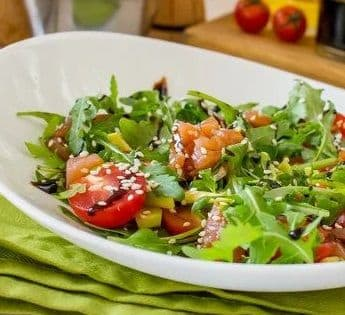
- 1. Рукколу промыть, просушить. Переложить в салатник.
- 2. Перец нарезать соломкой, переложить к рукколе.
- 3. Посолить, поперчить по вкусу. Добавить оливковое масло, перемешать.
- 4. Перед подачей посыпать кунжутом.
Картофельное пюре (ФИЦ Питания)
| Ингредиенты на 200 г готового блюда | Продукт | Кол-во | Вес |
|---|---|---|---|
| Картофель, сырой | 3 шт. | 285.2 г | |
| Коровье молоко, 3,2% жирности пастеризованное | 2.5 столовые ложки | 45.2 мл | |
| Соль, столовая йодированная | 8.5 г | 8.7 г | |
| Подсолнечное масло, высокоолеиновое (>70%) | 0.5 г | 0.5 мл |

- Очищенный картофель промыть, сварить в подсоленной воде, отвар слить. Горячий картофель пропустить через протирочную машину (или блендер), соединить с горячим кипяченым молоком, маслом, хорошо перемешать, прогреть. Блюдо подавать горячим.
Свекла отварная (ФИЦ Питания)
| Ингредиенты на 100 г готового блюда | Продукт | Кол-во | Вес |
|---|---|---|---|
| Свекла | 2 шт. | 166.1 г |
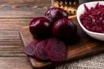
- Отваренную в кожуре свеклу очистить. Подавать можно нарезанной на крупные дольки или пропущенной через протирочную машину и прогретой
Семга запеченная
| Ингредиенты на 120 г готового блюда | Продукт | Кол-во | Вес |
|---|---|---|---|
| Лосось, атлантический (семга) | 0.5 шт. | 103.5 г | |
| Соевый соус | 2.5 столовые ложки | 34.5 г | |
| Базилик, сушеный | 1 столовая ложка | 5.2 г |
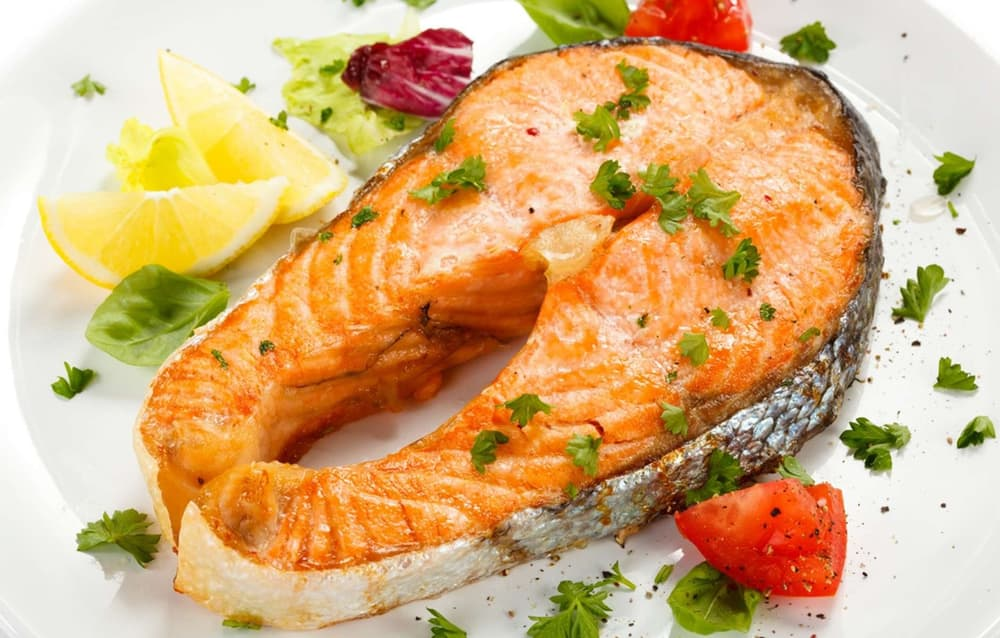
- Филе семги замариновать в соевом соусе в течении 3-4 минут. Предварительно разогреть духовку до 200-220 градусов ,выложить филе на протвинь ,покрытый фольгой . Без добавления масла. Присыпать базиликом .Запекать 15 минут в зависимости от размера кусков.
Суп куриный с лапшой
| Ингредиенты на 200 г готового блюда | Продукт | Кол-во | Вес |
|---|---|---|---|
| Картофель, сырой | 21.5 г | 21.7 г | |
| Масло сливочное 72,5% жирности, крестьянское | 2 г | 2.2 г | |
| Бульон, куриный | 0.5 стакана 250 мл. | 152.2 г | |
| Морковь | 8.5 г | 8.7 г | |
| Макароны, сухие | 17.5 г | 17.4 г | |
| Лук, репчатый | 4.5 г | 4.4 г | |
| Соль, столовая йодированная | 1 г | 1.1 г |

- Овощи предварительно перебрать, очистить, промыть. Подготовленные морковь, репчатый лук мелко нашинковать, припустить в небольшом количестве бульона с добавлением сливочного масла затем добавить бульон мелко шинкованный картофель, соль и варить до готовности. Вермишель отварить в большом количестве воды, откинуть на сито, соединить с куриным бульоном, довести до кипения. Можно посыпать мелко нашинкованной свежей зеленью.
- #с4лет
Салат греческий
| Ингредиенты на 70 г готового блюда | Продукт | Кол-во | Вес |
|---|---|---|---|
| Огурец. грунтовый | 13.5 г | 13.4 г | |
| Помидор (томат) | 15.5 г | 15.7 г | |
| Лук, репчатый | 4 г | 3.9 г | |
| Перец сладкий, красный | 19.5 г | 19.7 г | |
| Перец душистый, молотый | 1 г | 0.8 г | |
| Оливки (чёрные), консервированные | 1 шт. | 3.9 г | |
| Оливковое масло | 4 г | 3.9 мл | |
| Сок из лимона | 1.5 г | 1.6 мл | |
| Сыр фета, м.д.ж. 48% в сух. в-ве | 15.5 г | 15.7 г |

- Овощи моют, обсушивают, нарезают кубиками. Сыр «фета» нарезают кубиком. Лук — кольцами. На тарелку выкладывают лист салата, сверху нарезанные овощи, сыр «фета», кольца лука.
- Салат солят, перчат, поливают оливковым маслом и лимонным соком.
Каша гречневая рассыпчатая
| Ингредиенты на 200 г готового блюда | Продукт | Кол-во | Вес |
|---|---|---|---|
| Вода | 4 столовые ложки | 74.5 мл | |
| Гречиха, зерно | 2 столовые ложки | 50.4 г | |
| Масло сливочное 72,5% жирности, крестьянское | 3.5 г | 3.3 г |
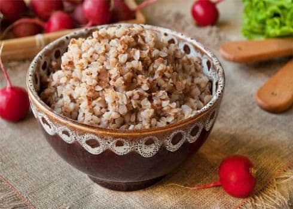
- В кипящую воду всыпать крупу и варить до набухания, затем варить на медленном огне до готовности.
- #с4лет
Биточки из индейки
| Ингредиенты на 100 г готового блюда | Продукт | Кол-во | Вес |
|---|---|---|---|
| Индейка | 73.2 г | 73.2 г | |
| Коровье молоко, 1,5% жирности пастеризованное | 24.5 г | 24.4 мл | |
| Панировочные сухари | 10 г | 9.8 г | |
| Хлеб пшеничный | 16.5 г | 16.6 г |
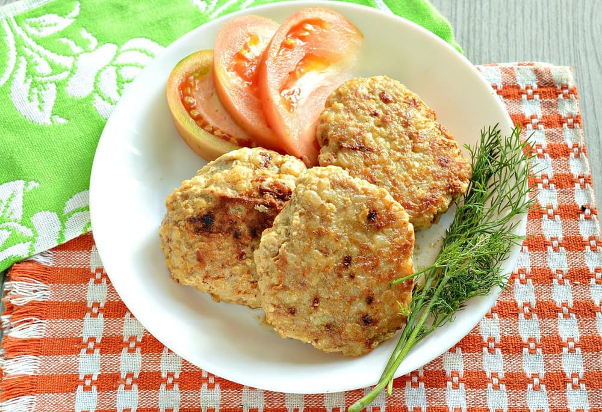
- Мясо измельчить в мясорубке, добавить замоченный в молоке хлеб, массу пропустить через мясорубку, сформовать, обвалять в сухарях, обжарить на сковороде основным способом, довести до готовности в жарочном шкафу.
- #с7лет
Булочка с изюмом печеная (ФИЦ Питания)
| Ингредиенты на 50 г готового блюда | Продукт | Кол-во | Вес |
|---|---|---|---|
| Пшеничная мука, белая высшего сорта | 24 г | 23.8 г | |
| Коровье молоко, 3,2% жирности пастеризованное | 12 г | 11.9 мл | |
| Подсолнечное масло, высокоолеиновое (>70%) | 3.5 г | 3.3 мл | |
| Сахар, песок | 2.5 г | 2.4 г | |
| Яйцо, куриное | 5 г | 4.8 г | |
| Изюм, без косточек | 5 г | 4.8 г | |
| Дрожжи, прессованные | 1 г | 1 г | |
| Соль, столовая йодированная | 0.1 г | 0.1 г |
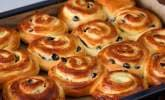
- В теплом молоке (30-35С) развести дрожжи, добавить соль, сахар, муку, масло и замесить тесто, перед окончанием замеса добавить промытый изюм (без зернышек). Тесто замесить так, чтобы оно хорошо отставало от края посуды, затем поставить в теплое место и дать ему подняться, после чего разделать булочки, выложить их на противень, смазанный маслом (2г рецептурного количества) и оставить для расстойки. Перед выпечкой поверхность булочки смазать яйцом и выпекать в жарочном шкафу при температуре 200-240С 8-10 минут.
Кисель из клюквы
| Ингредиенты на 300 г готового блюда | Продукт | Кол-во | Вес |
|---|---|---|---|
| Вода | 1 стакан 250 мл. | 252.1 мл | |
| Картофельный крахмал | 2 чайные ложки | 20.2 г | |
| Сахар, песок | 1 столовая ложка | 25.2 г | |
| Клюква | 0.5 стакана 200 мл. | 32.8 г |

- Ягоды варят 20-30 мин при слабом кипении, протирают и соединяют с отваром, в котором они варились, добавляют сахар, доводят до кипения, вводят подготовленный крахмал и вновь доводят до кипения.
Рис отварной рассыпчатый (ФИЦ Питания)
| Ингредиенты на 200 г готового блюда | Продукт | Кол-во | Вес |
|---|---|---|---|
| Рис белый, длиннозерный сухой | 2 столовые ложки | 47.6 г | |
| Вода | 0.5 стакана 200 мл. | 99.6 мл | |
| Соль, столовая йодированная | 1 г | 0.9 г | |
| Масло сливочное 72,5% жирности, крестьянское | 4.5 г | 4.4 г |

- Рис перебрать, промыть в теплой и горячей воде, засыпать в кипящую, подсоленную воду, удалить всплывшие пустотелые зерна и варить до готовности. Откинуть рис на сито, добавить сливочное масло, тщательно перемешать, прогреть. Подавать в теплом виде на гарнир.
Говядина отварная (ФИЦ Питания)
| Ингредиенты на 100 г готового блюда | Продукт | Кол-во | Вес |
|---|---|---|---|
| Соль поваренная пищевая | 1 г | 1.2 г | |
| Говядина, 2 кат. | 0.5 куска | 150 г | |
| Морковь | 6 г | 6 г | |
| Лук, репчатый | 6 г | 6 г |
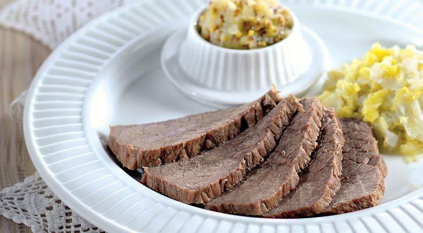
- Мясо промыть, отделить от костей, опустить в холодную воду, закрыть крышкой, довести до кипения, снять образовавшуюся на поверхности пену, добавить морковь, лук и продолжить варить при медленном кипении 2-2,5 часа. Перед подачей мясо нарезать на порции и прогреть в бульоне. 3 ч
Сырники творожные запеченные
| Ингредиенты на 120 г готового блюда | Продукт | Кол-во | Вес |
|---|---|---|---|
| Масло сливочное 72,5% жирности, крестьянское | 1.5 г | 1.5 г | |
| Соль, столовая йодированная | 0.5 г | 0.5 г | |
| Пшеничная мука цельнозерновая | 15.5 г | 15.3 г | |
| Творог, 5% жирности | 5.5 столовые ложки | 97 г | |
| Сахар, песок | 1 чайная ложка | 8.2 г | |
| Яйцо, куриное | 8 г | 8.2 г | |
| Сметана, 20% жирности | 4 г | 4.1 г |

- Творог протереть, добавить яйцо, сахар, муку,соль и тщательно перемешать. Сформовать круглые сырники по 2 штуки на порцию. Запанировать в муке. выложить на противень, смазанный маслом.Сверху сырники смазать сметаной и запекать в духовом шкафу при температуре 200-250 гр.
Куриный ролл в тортилье
| Ингредиенты на 180 г готового блюда | Продукт | Кол-во | Вес |
|---|---|---|---|
| Мексиканская лепешка (тортилья) | 1 шт. | 60 г | |
| Куриная грудка (филе), запеченная без масла | 90 г | 90 г | |
| Огурец. грунтовый | 0.5 шт. | 30 г |
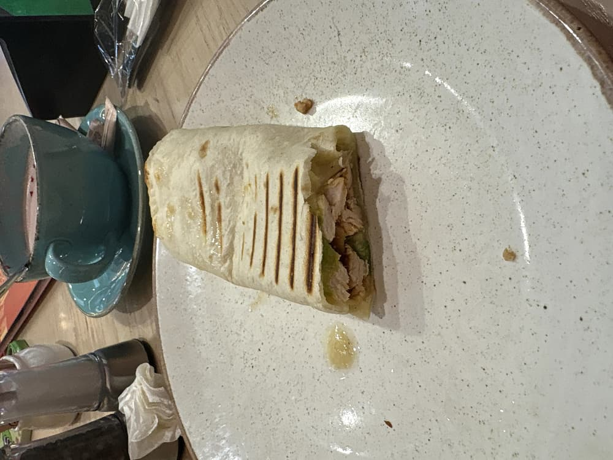
Фруктовый салат, (яблоко, груша, апельсин, киви)
| Ингредиенты на 89 г готового блюда | Продукт | Кол-во | Вес |
|---|---|---|---|
| Апельсин | 25 г | 25 г | |
| Груша | 25 г | 25 г | |
| Киви, свежее | 25 г | 25 г | |
| Яблоко | 25 г | 25 г |
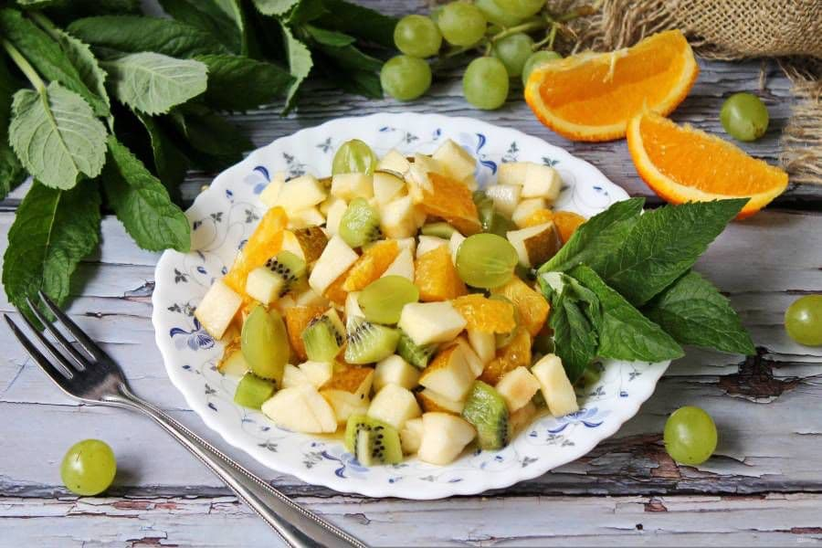
- Все плоды хорошо промывают. Яблоки, груши, апельсины очищенные от кожицы, с удаленными семенными гнездами, нарезают тонкими ломтиками. Подготовленные плоды и киви смешивают в емкости, при выдаче поливают соком плодовым натуральным (непосредственно перед отпуском).
Щи из свежей капусты на мясном бульоне со сметаной (ФИЦ Питания)
| Ингредиенты на 250 г готового блюда | Продукт | Кол-во | Вес |
|---|---|---|---|
| Капуста, белокочанная | 62.4 г | 62.4 г | |
| Картофель, сырой | 0.5 шт. | 41.6 г | |
| Морковь | 10.5 г | 10.4 г | |
| Лук, репчатый | 5 г | 5 г | |
| Подсолнечное масло, высокоолеиновое (>70%) | 2 г | 2.1 мл | |
| Сметана, 20% жирности | 4 г | 4.2 г | |
| Петрушка, свежая | 1.5 чайные ложки | 2.9 г | |
| Петрушка (корень) | 3 г | 2.9 г | |
| Помидор (томат) | 10 г | 10 г | |
| Бульон, говяжий | 0.5 стакана 250 мл. | 187.2 г | |
| Соль, столовая йодированная | 0.2 г | 0.2 г |

- Подготовленные овощи: морковь, репчатый лук, корень петрушки мелко нарезать, припустить в небольшом количестве воды с добавлением масла, в конце добавить томат или свежие помидоры. Белокочанную капусту зачистить, промыть, нарезать тонкими шашками, залить горячим мясным бульоном, довести до кипения, добавить мелко нарезанный картофель, припущенные коренья, соль и варить до готовности. При подаче суп заправить сметаной и посыпать мелко нарезанной зеленью петрушки.
Макароны, отварные
| Ингредиенты на 200 г готового блюда | Продукт | Кол-во | Вес |
|---|---|---|---|
| Макароны, сухие | 3 столовые ложки | 79.7 г | |
| Соль, столовая йодированная | 1 г | 0.8 г |

- В кипящую подсоленную воду отправляют макароны, убавляют огонь до среднего и варят до желаемой мягкости. Готовые макароны нужно откинуть на дуршлаг.
Томат с моцареллой
| Ингредиенты на 50 г готового блюда | Продукт | Кол-во | Вес |
|---|---|---|---|
| Помидор (томат), грунтовый | 18.5 г | 18.4 г | |
| Сыр моцарелла, обезжиренный | 21.5 г | 21.5 г | |
| Базилик, свежий | 6 г | 6.1 г | |
| Подсолнечное масло, высокоолеиновое (>70%) | 4.5 г | 4.6 мл | |
| Соль, столовая йодированная | 1 г | 0.9 г | |
| Перец черный, молотый или горошек | 12.5 шт. | 1.2 г |
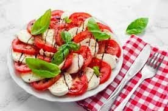
- Томаты и моцареллу порезать на слайсы, положить друг на друга. Полить маслом, посолить и поперчить.
Холодец из филе индейки
| Ингредиенты на 50 г готового блюда | Продукт | Кол-во | Вес |
|---|---|---|---|
| Индейка | 58.1 г | 58.1 г | |
| Чеснок, сырой | 4.5 г | 4.7 г | |
| Горчица, столовая | 4.5 г | 4.3 г | |
| Желатин (порошок) | 0.5 чайные ложки | 2.7 г |

- Мясо индейки без жира отварить в 2 л. воды, переодически снимая пену (можно взять мясо на кости)
- Добавить лавровый лист, перей черный горошком (5-6шт) и соль по-вкусу. Варить 2 ч. на медленном огне
- Желатин залить стаканом воды и оставить набухать 40 минут, а потом растопить импульсами в микроволновке, периодически помешивая. Если желатин быстрорастворимый, то развести его горячим бульоном по инструкции.
- Мясо нарезать, добавить натертый чеснок (1 зубчик)
- В бульон добавить растворенный желатин, размешать и залить мясо бульоном, охладить и поставить в холодильник
- Подавать с горчицей, огурцами и зеленью
Сёмга запеченная
| Ингредиенты на 120 г готового блюда | Продукт | Кол-во | Вес |
|---|---|---|---|
| Лосось, атлантический (семга) | 0.5 шт. | 154.6 г |
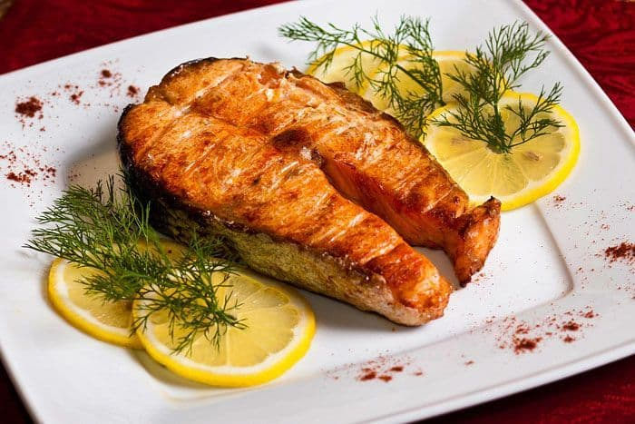
- 1. Запечь сёмгу до готовности.
- 2. Добавить специи по вкусу.
Рис отварной
| Ингредиенты на 200 г готового блюда | Продукт | Кол-во | Вес |
|---|---|---|---|
| Вода | 4.5 столовые ложки | 78.7 мл | |
| Рис белый, длиннозерный сухой | 2 столовые ложки | 53.9 г | |
| Масло сливочное 72,5% жирности, крестьянское | 9 г | 9 г |

- Подготовленную рисовую крупу кладут в подсоленную кипящую воду и варят при слабом кипении. Когда зерна набухнут и станут мягкими, рис откидывают и промывают холодной водой. После стекания воды рис кладут в посуду, заправляют маслом, перемешивают и прогревают
- #с4лет
Капуста белокочанная тушеная (ФИЦ Питания)
| Ингредиенты на 100 г готового блюда | Продукт | Кол-во | Вес |
|---|---|---|---|
| Капуста, белокочанная | 111.1 г | 111.1 г | |
| Морковь | 5.5 г | 5.3 г | |
| Лук, репчатый | 5.5 г | 5.3 г | |
| Паста, томатная | 1.5 г | 1.6 г | |
| Подсолнечное масло, высокоолеиновое (>70%) | 0.5 чайные ложки | 2.7 мл | |
| Вода | 21 г | 21.2 мл |
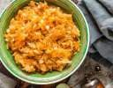
- Подготовленные, мелко нарезанные морковь, репчатый лук припустить в небольшом количестве воды с добавлением масла, за 5-10 минут до окончания добавить томат. Белокочанную капусту зачистить, промыть, нарубить соломкой, тушить в овощном отваре или воде в течение 10-15 минут до полуготовности. Подготовленную капусту соединить с припущенными овощами, добавить оставшееся масло и тушить при слабом кипении до готовности.
Котлеты из рубленой индейки
| Ингредиенты на 100 г готового блюда | Продукт | Кол-во | Вес |
|---|---|---|---|
| Подсолнечное масло, высокоолеиновое (>70%) | 0.5 г | 0.6 мл | |
| Индейка, белое мясо | 109.9 г | 109.9 г | |
| Лук, репчатый | 20.5 г | 20.6 г | |
| Соль, столовая йодированная | 0.5 г | 0.6 г | |
| Базилик, сушеный | 0.5 г | 0.6 г | |
| Уксус, бальзамический | 0.5 г | 0.6 г | |
| Перец черный, молотый или горошек | 5.5 шт. | 0.6 г | |
| Яйцо, куриное | 14.5 г | 14.3 г |
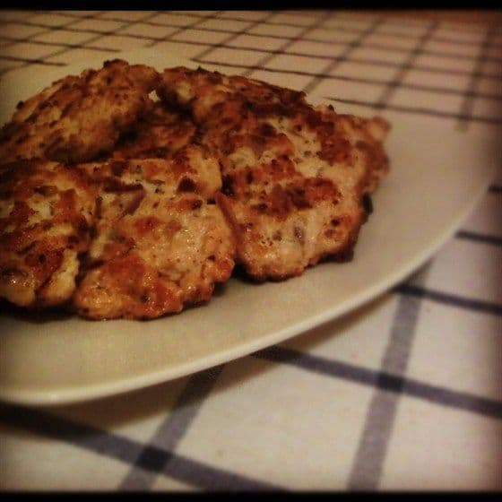
- 1. Филе индейки промыть и нарубить на мелкие кубики. Положить нарубленное мясо в кастрюлю, либо в глубокую миску.
- 2. Красный лук нарубить на мелкие кубики и положить в небольшую миску. Залить лук кипятком на 3–5 минут для того, чтобы избавиться от сильной горечи.
- 3. Откинуть лук на дуршлаг и дать воде стечь. Добавить лук к нарубленному мясу. Хорошо перемешать.
- 4. Добавить в смесь мяса и лука соли, перца и базилика. Сбрызнуть белым бальзамическим уксусом для усиления вкуса мяса и большей пышности котлеток. Перемешать.
- 5. Дать постоять фаршу 15–20 минут.
- 6. К мясу добавить.
- 7. Столовой ложкой формируя котлетку, выкладывать на сковороду. Среднее время обжарки с двух сторон около 7–10 минут на среднем огне.
Сок вишневый без сахара терпкий
| Ингредиенты на 200 г готового блюда | Продукт | Кол-во | Вес |
|---|---|---|---|
| Сок из яблок | 1 стакан 200 мл. | 200 мл |
- Сок из вишнни
Скрембл с творожным сыром и зеленым луком
| Ингредиенты на 100 г готового блюда | Продукт | Кол-во | Вес |
|---|---|---|---|
| Яйцо, куриное | 1 шт. | 62.8 г | |
| Лук зеленый (перо) | 10.5 г | 10.5 г | |
| Творожный сыр сливочный | 15.5 г | 15.7 г | |
| Хлеб из цельного зерна | 21 г | 20.9 г | |
| Масло сливочное | 0.5 чайные ложки | 5.2 г |
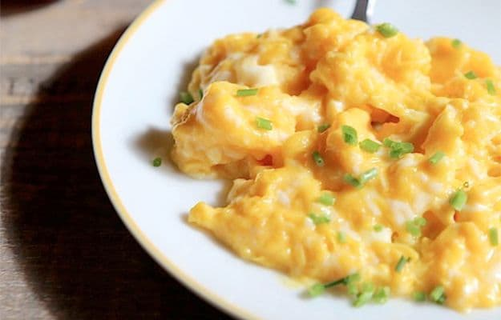
- 1. Яйца слегка взбиваем и добавляем творожный сыр. и измельченный лук (сыр пусть остается кусочками, размешивать до однородности ненужно)
- 2. На сковороде растапливаем масло и начинаем собирать его хлебом так, чтоб хлеб впитал масло, проделываем это с двух сторон, далее обжариваем хлеб с двух сторон.
- 3. Выкладываем хлеб на салфетку, чтоб убрать лишнее масло.
- 4. В эту же сковороды вливаем яичную смесь и начинаем сразу собирать ях лопаткой, как только яйца схватились, выкладываем их на хлеб (окончательно они дойдут уже на хлебе)
Каша рисовая на молоке
| Ингредиенты на 300 г готового блюда | Продукт | Кол-во | Вес |
|---|---|---|---|
| Коровье молоко, 1,5% жирности пастеризованное | 1 стакан 200 мл. | 211.3 мл | |
| Рис белый, короткозерный сухой | 0.5 стакана 250 мл. | 105.6 г |
- оакдл
Быстрое овсяное печенье
| Ингредиенты на 50 г готового блюда | Продукт | Кол-во | Вес |
|---|---|---|---|
| Яйцо, куриное | 11 г | 10.8 г | |
| Овсяная крупа (овес) | 7 г | 7.1 г | |
| Сахар, песок | 1 г | 1 г | |
| Пшеничная мука, белая высшего сорта | 6.5 г | 6.6 г | |
| Масло сливочное | 2 г | 2.1 г |

- 1. Размягченное сливочное масло растираем с сахаром добела, постепенно добавляя яйца. Когда сахар полностью растворится, добавляем смешанные с мукой овсяные хлопья и все перемешиваем.
- 2. Готовое тесто набираем ложкой и с помощью другой ложки выкладываем на смазанный маслом противень. Выпекаем 10 минут при температуре 180–200 градусов.
Суп «Ассорти»
| Ингредиенты на 250 г готового блюда | Продукт | Кол-во | Вес |
|---|---|---|---|
| Соль, столовая йодированная | 2 г | 2.2 г | |
| Вода | 1 стакан 200 мл. | 165.6 мл | |
| Лук порей | 11 г | 11 г | |
| Морковь | 0.5 шт. | 41.4 г | |
| Лук, репчатый | 0.5 шт. | 27.6 г | |
| Картофель, сырой | 0.5 шт. | 41.4 г | |
| Говядина, 1 кат. | 27.6 г | 27.6 г | |
| Свинина, мясная | 22 г | 22.1 г | |
| Лавровый лист | 0 г | 0 г | |
| Тмин, семена | 1.5 г | 1.7 г | |
| Перец черный, молотый или горошек | 3 г | 2.8 г | |
| Гвоздика, молотая | 3 шт. | 0.3 г |
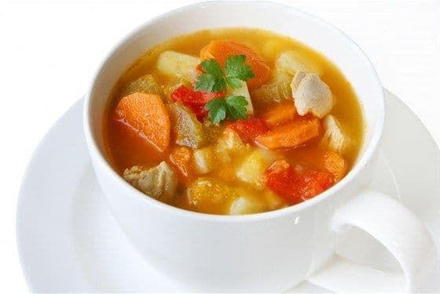
- 1. В кастрюлю, подходящую для микроволновой печи, положить нарезанное небольшими кусочками мясо, кубиками — морковь и картофель, лавровый лист и гвоздику, налить половину воды, посолить, поперчить, перемешать. Накрыть крышкой, варить 10 минут на средней мощности в микроволновой печи.
- 2. Добавить мелко нарезанный репчатый лук и стебель лука-порея и все хорошо перемешать. Посыпать тмином. Влить вторую половину воды, накрыть крышкой и варить 10 минут на средней мощности СВЧ-печи (1–2 раза помешав).
Салат из капусты
| Ингредиенты на 90 г готового блюда | Продукт | Кол-во | Вес |
|---|---|---|---|
| Капуста, белокочанная | 42.6 г | 42.6 г | |
| Морковь | 0.5 шт. | 42.8 г | |
| Лук, репчатый | 8 г | 8 г | |
| Оливковое масло | 0.5 столовые ложки | 6.4 мл | |
| Мед, пчелиный | 6.5 г | 6.4 г | |
| Уксус, яблочный | 3.5 г | 3.6 г | |
| Соль, столовая йодированная | 0.2 г | 0.2 г | |
| Чеснок, порошок | 0.5 г | 0.5 г |
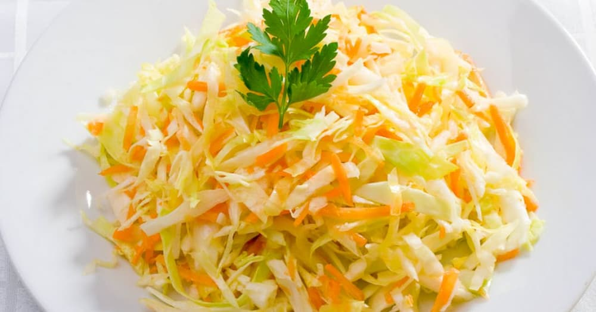
- 1.Мелко порезать капусту и морковь тонкими ломтиками
- 2.В отдельной миске сделать заправку из оливокового масла, уксуса и меда
- 3.Помять капусту и морковь с солью и добавить заправку
Тушеная печень
| Ингредиенты на 80 г готового блюда | Продукт | Кол-во | Вес |
|---|---|---|---|
| Перец черный, молотый или горошек | 1.5 шт. | 0.2 г | |
| Соль, столовая йодированная | 0.2 г | 0.2 г | |
| Печень говяжья | 0.5 куска | 79.7 г |
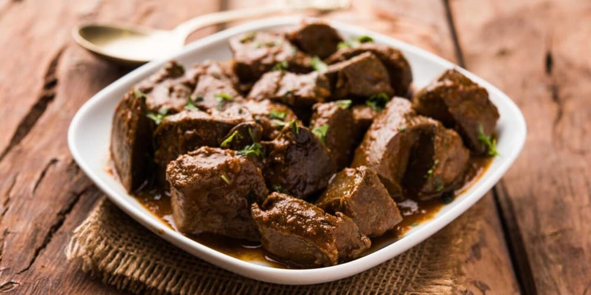
- - потушить печень в течение 30 минут, добавить соль и перец по вкусу
Булгур, приготовленный
| Ингредиенты на 200 г готового блюда | Продукт | Кол-во | Вес |
|---|---|---|---|
| Булгур, сухой | 2.5 столовые ложки | 48 г | |
| Вода | 5.5 столовые ложки | 95.9 мл | |
| Соль, столовая йодированная | 0.5 г | 0.5 г |
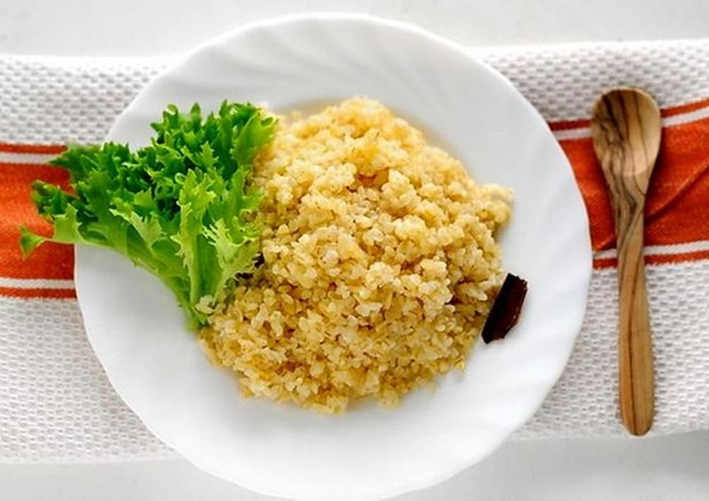
- В кастрюле или сковороде
- Залейте крупу водой, добавьте соль и перемешайте. Доведите до кипения и убавьте огонь до минимума. Накройте кастрюлю крышкой и варите булгур 15–20 минут, пока он не впитает всю воду.
Курина грудка (филе), запеченная без масла
| Ингредиенты на 100 г готового блюда | Продукт | Кол-во | Вес |
|---|---|---|---|
| Грудка цыпленка-бройлера (курица) | 0.5 шт. | 117.1 г | |
| Соль, столовая йодированная | 2 г | 1.8 г | |
| Перец черный, молотый или горошек | 9 шт. | 0.9 г |
- купакп
Салат из капусты и моркови
| Ингредиенты на 150 г готового блюда | Продукт | Кол-во | Вес |
|---|---|---|---|
| Капуста, белокочанная | 80 г | 80 г | |
| Морковь | 0.5 шт. | 50 г | |
| Подсолнечное масло | 2 чайные ложки | 10 мл | |
| Уксус, столовый 9% | 1 чайная ложка | 5 г | |
| Соль поваренная пищевая | 5 г | 5 г |
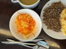
Ржаные крекеры с пряными травами
| Ингредиенты на 50 г готового блюда | Продукт | Кол-во | Вес |
|---|---|---|---|
| Соль, столовая йодированная | 0.5 г | 0.6 г | |
| Ржаная мука, обойная | 22 г | 22.1 г | |
| Масло сливочное | 9 г | 9.2 г | |
| Вода | 18.5 г | 18.5 мл | |
| Тимьян, свежий | 0.5 чайные ложки | 0.9 г | |
| Розмарин, свежий | 1 г | 0.9 г |
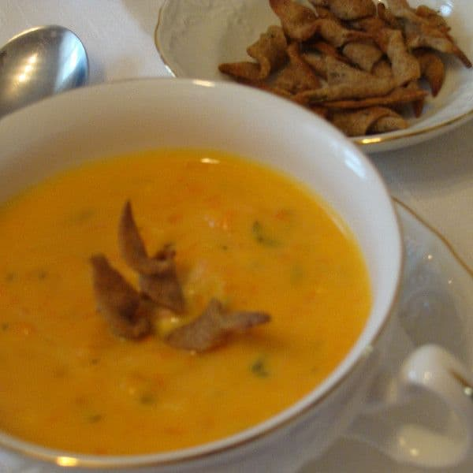
- 1. Разогреть духовку до 180 градусов. Одновременно сливочное масло растереть с травами, добавить муку, соль и воду.
- 2. Замесить мягкое тесто. Раскатать и вырезать формы.
- 3. Печь 10 минут при 180 градусах.
- 4. Рекомендация: подавать к любому суп пюре. И Наслаждаться вкусом и ароматом. Приятного аппетита!
Запеченная скумбрия
| Ингредиенты на 100 г готового блюда | Продукт | Кол-во | Вес |
|---|---|---|---|
| Скумбрия, атлантическая | 0.5 шт. | 110.2 г | |
| Лимон | 0.5 шт. | 33.1 г | |
| Перец душистый, молотый | 0.5 г | 0.3 г | |
| Соль, столовая йодированная | 0.5 г | 0.3 г |
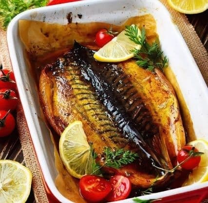
- 1. Скумбрию почистить и промыть. Натереть снаружи и изнутри солью и перцем.
- 2. Положить рыбу на пергамент, свернуть его в виде лодочки, и поместить в форму для запекания.
- 3. Внутрь рыбы положить нарезанный полукольцами лимон.
- 4. Запекать при температуре 200 градусов 30 минут.
Суп, Рассольник домашний
| Ингредиенты на 200 г готового блюда | Продукт | Кол-во | Вес |
|---|---|---|---|
| Картофель, сырой | 1 шт. | 83.3 г | |
| Огурцы, маринованные с укропом | 13.5 г | 13.5 г | |
| Лук, репчатый | 10.5 г | 10.4 г | |
| Бульон, говяжий | 0.5 стакана 250 мл. | 145.8 г | |
| Подсолнечное масло, высокоолеиновое (>70%) | 4 г | 4.2 мл | |
| Морковь | 10.5 г | 10.4 г |
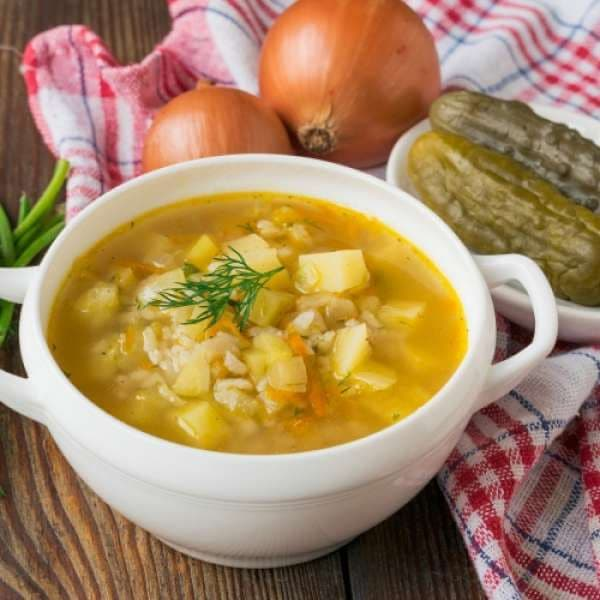
- 1. В кипящий бульон или воду положить картофель, нарезанный дольками или брусочками, довести до кипения.
- 2. Добавить припущенный лук и морковь, а через 5-10 мин ввести припущенные огурцы, в конце варки добавить соль.
Кисель из яблок
| Ингредиенты на 300 г готового блюда | Продукт | Кол-во | Вес |
|---|---|---|---|
| Вода | 1 стакан 200 мл. | 218.2 мл | |
| Кукурузный крахмал | 13.5 г | 13.6 г | |
| Сахар, песок | 5 чайных ложек | 40.9 г | |
| Яблоко, сушеное | 1 стакан 200 мл. | 54.6 г |

- Подготовленные яблоки залить водой, добавить сахар и довести до кипения. Затем добавить крахмал и загущить.
Овсяное печенье
| Ингредиенты на 50 г готового блюда | Продукт | Кол-во | Вес |
|---|---|---|---|
| Овсяная крупа (овес), "Геркулес" хлопья | 8 г | 8 г | |
| Кефир, 2,5% жирности | 8 г | 8 мл | |
| Яйцо, куриное | 2 г | 2.1 г | |
| Курага (абрикосы сушеные) | 3 г | 3.2 г | |
| Пшеничная мука цельнозерновая | 1 г | 1.2 г |
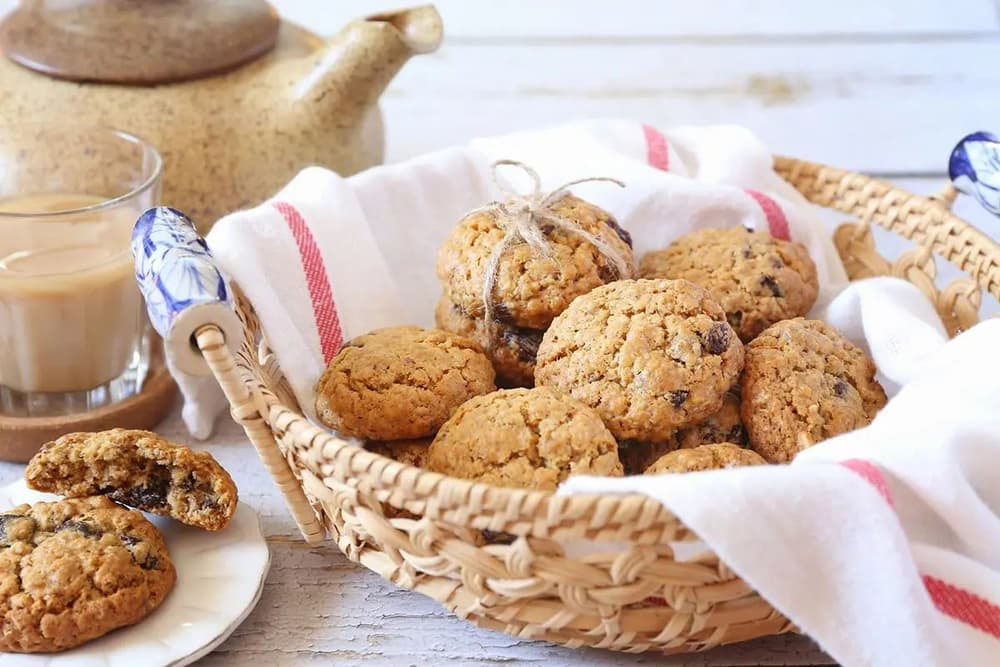
- Овсянку замочить в кефире минут на 30. Сухофрукты промыть, и замочить в кипятке до размягчения.
- Лично я пробиваю блендером сухофрукты вместе с овсянкой, по мне так нежнее печенье. Но можно овсянку не трогать.
- Смешать измельченные сухофрукты с овсянкой, мукой, яйцом и солью.
- Духовку разогреть до 180°
- На противень постелить коврик или пекарскую бумагу.
- Выложить печенье столовой ложкой и немного сформировать.
- Выпекать 20-25 минут, до золотистости.
Смузи (яблоко, морковь, ананас) со сливками
| Ингредиенты на 300 г готового блюда | Продукт | Кол-во | Вес |
|---|---|---|---|
| Яблоко | 1 шт. | 138.2 г | |
| Морковь | 1.5 шт. | 118.4 г | |
| Ананас | 118.4 г | 118.4 г | |
| Сливки, 20% жирности пастеризованные | 19.5 г | 19.7 г |
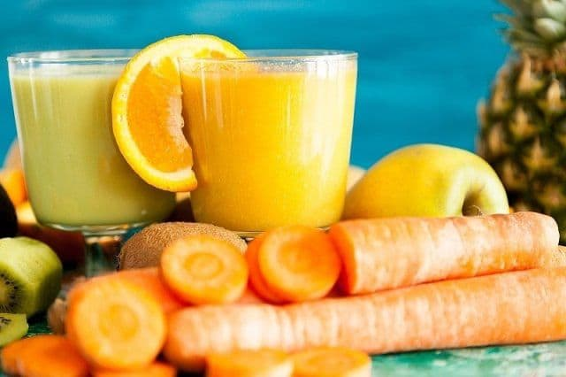
- Пробить в блендере
Паста в соусе песто с креветками
| Ингредиенты на 300 г готового блюда | Продукт | Кол-во | Вес |
|---|---|---|---|
| Паста (пенне), сухая | 61.6 г | 61.6 г | |
| Креветка, приготовленная на пару | 15 шт. | 180.8 г | |
| Подсолнечное масло, высокоолеиновое (>70%) | 2.5 чайные ложки | 12.3 мл | |
| Базилик, свежий | 24.5 г | 24.7 г | |
| Кедровый орех, сушеный | 16.5 г | 16.4 г | |
| Чеснок, сырой | 8 г | 8.2 г |
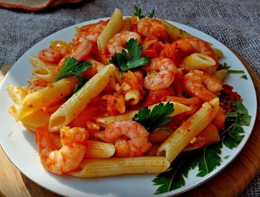
- 1. Делаем соус песто: смешиваем в блендере масло, пучок базилика, орехи, чеснок.
- 2. Пасту и креветки отварить. Раскалить сковороду, бросить туда мелко порубленный чеснок. Помешивая, жарить 30 секунд. Добавить креветки. Продолжая помешивать, держать на огне еще 1,5 минуты.
- Подмешать к морепродуктам песто, посолить и поперчить. Переложить отваренную пасту в сковороду с соусом, хорошо перемешать и прогреть на огне 1,5 минуты.
- Выложить готовую пасту в тарелку, украсить листиками базилика. Сразу подать блюдо на стол.
Салат из свежих помидоров с перцем
| Ингредиенты на 82 г готового блюда | Продукт | Кол-во | Вес |
|---|---|---|---|
| Лук зеленый (перо) | 5 г | 5 г | |
| Соль, столовая йодированная | 1 г | 1 г | |
| Подсолнечное масло, высокоолеиновое (>70%) | 6 г | 6 мл | |
| Помидор (томат) | 0.5 шт. | 48 г | |
| Петрушка, свежая | 1 столовая ложка | 5 г | |
| Перец сладкий, желтый | 35 г | 35 г |
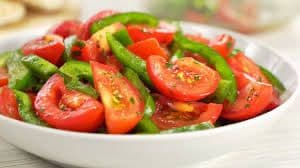
- Помидоры, очищенные от кожицы, режут тонкими ломтиками, перец сладкий – соломкой, лук репчатый или лук зеленый – шинкуют. Овощи смешивают, добавляют соль и масло растительное (непосредственно перед подачей) и перемешивают.
Компот из крыжовника и черной смородины
| Ингредиенты на 300 г готового блюда | Продукт | Кол-во | Вес |
|---|---|---|---|
| Вода | 1 стакан 200 мл. | 205.9 мл | |
| Сахар, песок | 4.5 чайные ложки | 35.3 г | |
| Крыжовник | 0.5 стакана 200 мл. | 44.1 г | |
| Смородина, черная | 0.5 стакана 200 мл. | 44.1 г |

- Ягоды перебирают, удаляют плодоножки и моют. В готовый горячий сироп кладут подготовленные крыжовник и черную смородину, доводят до кипения и охлаждают.
- Для сиропа: в горячей воде растворяют сахар, доводят до кипения, проваривают 10-12 мин и процеживают.
Каша гречневая молочная без масла
| Ингредиенты на 250 г готового блюда | Продукт | Кол-во | Вес |
|---|---|---|---|
| Вода | 3 столовые ложки | 53.4 мл | |
| Гречиха, зерно | 1.5 столовые ложки | 35.6 г | |
| Коровье молоко, 2,5% жирности пастеризованное | 6.5 столовые ложки | 115.7 мл | |
| Сахар, песок | 4.5 г | 4.5 г |

- В кипящую воду всыпают перебранную и промытую крупу, перемешивают и варят до полуготовности. Затем вливают горячее молоко и варят до готовности при слабом кипении под закрытой крышкой.
- #с7лет
Каша рисовая молочная без масла
| Ингредиенты на 250 г готового блюда | Продукт | Кол-во | Вес |
|---|---|---|---|
| Вода | 2.5 столовые ложки | 45.9 мл | |
| Рис белый, короткозерный сухой | 43.6 г | 43.6 г | |
| Коровье молоко, 3,2% жирности пастеризованное | 6.5 столовые ложки | 114.7 мл | |
| Сахар, песок | 5.5 г | 5.7 г |
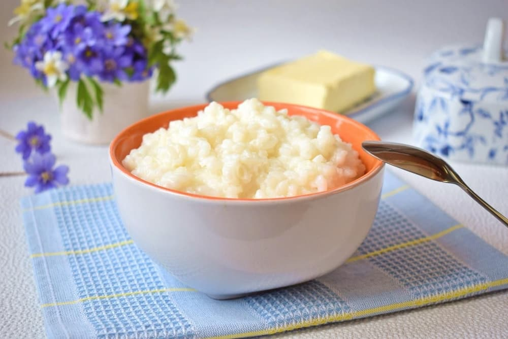
- Крупу рисовую перебрать, промыть в холодной и горячей воде. Откинуть на сито. Затем засыпать в кипящую воду, довести до загустения. Добавить горячее молоко, сахар, размешать и продолжать варить при медленном кипении.
- #с4лет
Блины с творогом
| Ингредиенты на 150 г готового блюда | Продукт | Кол-во | Вес |
|---|---|---|---|
| Сахарная пудра | 3 г | 2.9 г | |
| Подсолнечное масло, высокоолеиновое (>70%) | 0.5 г | 0.4 мл | |
| Коровье молоко, 2,5% жирности пастеризованное | 4 столовые ложки | 73.2 мл | |
| Яйцо, куриное | 4 г | 3.8 г | |
| Соль, столовая йодированная | 0.5 г | 0.4 г | |
| Творог, 2% жирности | 2.5 столовые ложки | 45.7 г | |
| Ванилин | 0.5 г | 0.4 г | |
| Яичный желток, куриный | 1.5 г | 1.5 г | |
| Сахар, песок | 4.5 г | 4.6 г | |
| Пшеничная мука, белая высшего сорта | 1 столовая ложка | 29.3 г |
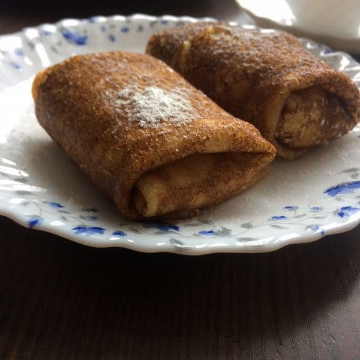
- 1. Готовим тесто для блинов: в молоко добавляем яйцо, сахар, соль, мешаем венчиком, добавляем муку и мешаем, чтобы не было комочков. Тесто должно быть не густое.
- 2. Творог смешиваем с сахаром и желтком, добавляем ванилин.
- 3. Жарим блин, переворачиваем и кладем начинку, примерно, столовую ложку. Заворачиваем и обжариваем. Чтобы блин не развалился, можно край смазать яйцом.
- 4. Посыпаем сахарной пудрой. Подаем со сметаной.
Борщ
| Ингредиенты на 250 г готового блюда | Продукт | Кол-во | Вес |
|---|---|---|---|
| Вода | 1 стакан 200 мл. | 177.9 мл | |
| Свекла | 8 г | 8 г | |
| Курица, 1 кат. | 55.6 г | 55.6 г | |
| Картофель, сырой | 0.5 шт. | 44.5 г | |
| Капуста, белокочанная | 22 г | 22.2 г | |
| Лук, репчатый | 6.5 г | 6.7 г | |
| Морковь | 6.5 г | 6.7 г | |
| Чеснок, сырой | 0.5 шт. | 3.2 г | |
| Сметана, 15% жирности | 0.5 чайные ложки | 4.5 г |
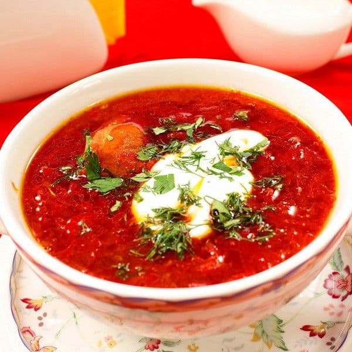
- 1. Курицу (можно взять куриное филе) отварить в подсоленной воде до готовности, после чего вытащить и дать подостыть.
- 2. Добавить в кипящий бульон нашинкованную капусту.
- 3. Через 10 минут кинуть нарезанную кубиками свёклу вместе с так же нарезанной картошкой.
- 4. Спустя минут 25 добавляем зажаренные лук+морковь.
- 5. Последний шаг — охлажденное отварное мясо нарезаем, как вам удобно, и кладём в суп.
- 6. Суп готов!) Дайте настояться, добавьте чеснок и сметану.
Тушеная говядина
| Ингредиенты на 100 г готового блюда | Продукт | Кол-во | Вес |
|---|---|---|---|
| Говядина, отборная вырезка сырая | 0.5 куска | 118 г | |
| Морковь | 22 г | 22.1 г | |
| Лук, репчатый | 0.5 шт. | 29.5 г | |
| Соль, столовая йодированная | 0.5 г | 0.3 г |

- Говядину порезать произвольными кусочками.⠀
- Взять кастрюлю с толстым дном или глубокую сковороду.⠀
- Положить туда кусочки говядины, залить стаканом кипятка.⠀
- Положить душистый перец, лавровый лист, довести до кипения.⠀
- Тушить на небольшом огне под крышкой примерно 30-40 минут или до почти полного выкипания жидкости.⠀⠀
- Лук почистить, порезать крупными полукольцами.⠀⠀
- Морковь почистить, порезать небольшими брусочками.⠀
- Когда в кастрюле почти вся жидкость выпарится, добавить лук.⠀⠀
- Добавить морковь.⠀⠀
- Хорошо перемешать, добавить 1 стакан кипятка, увеличить огонь, довести до кипения и затем тушить говядину на маленьком огне под крышкой в течение примерно 1,30 часа ( в сумме 2,5 ч).⠀⠀
- Мясо получается очень мягкое и тает во рту, соус имеет загустевший вид, и лук почти полностью растворяется в соусе.⠀
Картофельное пюре
| Ингредиенты на 200 г готового блюда | Продукт | Кол-во | Вес |
|---|---|---|---|
| Картофель, сырой | 3 шт. | 282.5 г | |
| Соль, столовая йодированная | 3 г | 2.8 г | |
| Коровье молоко, 2,5% жирности пастеризованное | 5.5 чайные ложки | 28.3 мл | |
| Масло сливочное | 22.5 г | 22.6 г |
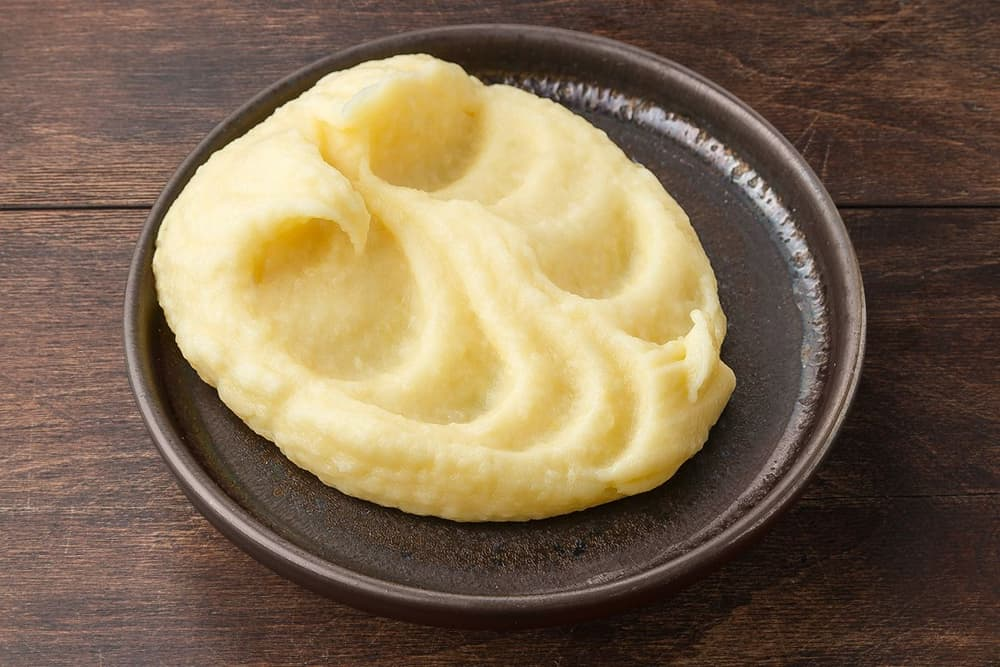
- Картофель отварить до готовности. Растолочь с маслом и молоком
Компот вишневый
| Ингредиенты на 300 г готового блюда | Продукт | Кол-во | Вес |
|---|---|---|---|
| Сахар, песок | 5.5 чайные ложки | 42.5 г | |
| Вода | 1 стакан 200 мл. | 198.1 мл | |
| Вишня | 14 шт. | 99.1 г |
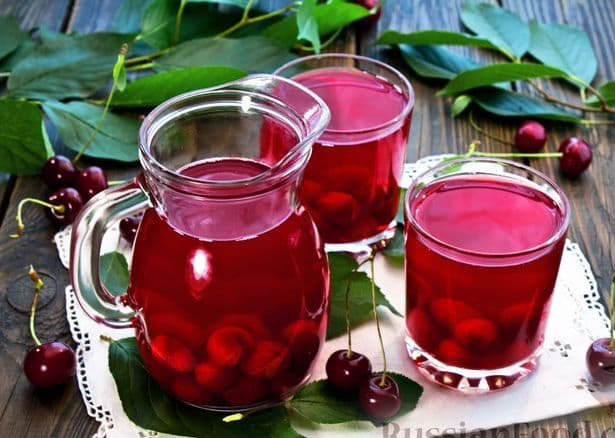
- 1. В кастрюлю налить необходимое количество питьевой воды, добавить сахар.
- 2. Вишню тщательно вымыть и убрать все ветки и листики, если таковые имеются.
- 3. Подслащенную воду довести до кипения, положить в нее вишневые ягоды.
- 4. Снова довести до кипения, варить 2-3 минуты.
- 5. Перед подачей компоту нужно дать настояться.
Свежий салат из огурцов и помидоров
| Ингредиенты на 150 г готового блюда | Продукт | Кол-во | Вес |
|---|---|---|---|
| Огурец. грунтовый | 0.5 шт. | 75 г | |
| Помидор (томат) | 1 шт. | 75 г |
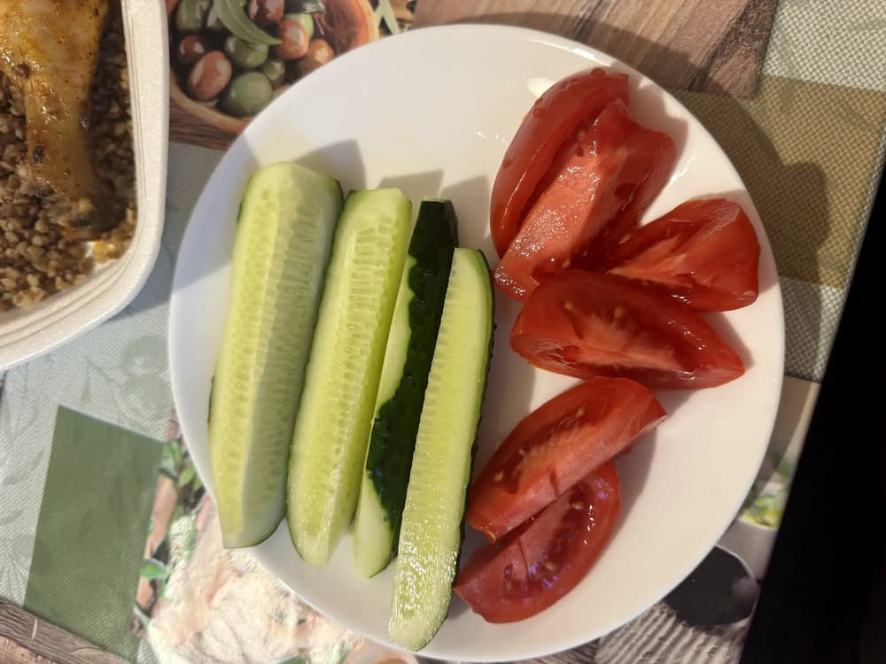
- 1. Огурцы тщательно вымойте и при необходимости очистите от кожуры.
- 2. Помидоры вымойте и удалите плодоножку.
- 3. Нарежьте огурцы кружочками или полукружочками.
- 4. Помидоры нарежьте дольками или крупными кубиками.
- 5. Смешайте овощи в салатнике и аккуратно перемешайте. По желанию можно добавить соль и свежую зелень перед подачей.
Запеченный лосось под болгарским перцем и…
| Ингредиенты на 120 г готового блюда | Продукт | Кол-во | Вес |
|---|---|---|---|
| Лосось, атлантический (семга) | 0.5 шт. | 83.3 г | |
| Лук, репчатый | 12.5 г | 12.5 г | |
| Подсолнечное масло | 10.5 г | 10.4 мл | |
| Помидор (томат) | 0.5 шт. | 41.7 г | |
| Чеснок, сырой | 1 г | 1 г | |
| Перец сладкий, красный | 12.5 г | 12.5 г | |
| Перец сладкий, зеленый | 12.5 г | 12.5 г | |
| Соль, столовая йодированная | 1 г | 0.8 г | |
| Перец черный, молотый или горошек | 8.5 шт. | 0.8 г | |
| Лавровый лист | 0 г | 0 г | |
| Орегано, сушеный | 0.5 чайные ложки | 0.8 г |
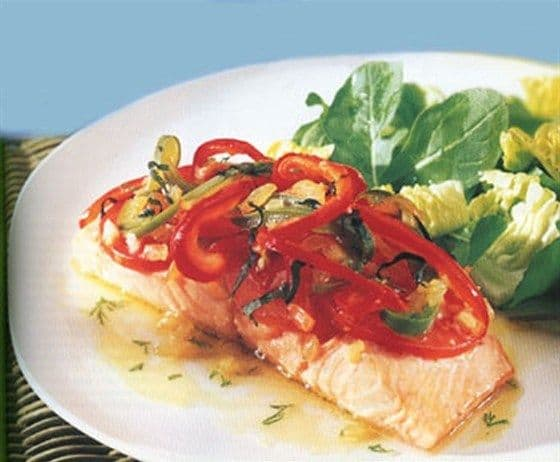
- 1. Половину красного и половину зеленого болгарского перца нарезать на тонкие ломтики, пассеровать в небольшом количестве растительного масла. Сразу же можно добавить к овощам половину небольшой мелко нарезанной луковицы.
- 2. Лосось поместить в форму, немного смазанную растительным маслом. Сверху выложить помидор, нарезанных на небольшие ломтики, и подготовленную перечную подливу. Посолить, поперчить, посыпать мелко нарезанным зубчиком чеснока. Можно положить 1 лавровый лист и орегано.
- 3. Теперь форму надо накрыть фольгой и выпекать в духовке при 180–200 градусах примерно 20 минут.
- 4. Достать лосось из духовки, разложить на порционные тарелки, посыпать укропом. Подать на стол с отварным картофелем, листьями салата и базилика.
мюсли батончик
| Ингредиенты на 50 г готового блюда | Продукт | Кол-во | Вес |
|---|---|---|---|
| Мюсли | 26 г | 26 г | |
| Яблоко | 18 г | 18.2 г | |
| Арахис, жареный | 8 г | 7.8 г |
- Мюсли батончик фруктово-орехово-зерновой
Зеленый смузи с манго
| Ингредиенты на 300 г готового блюда | Продукт | Кол-во | Вес |
|---|---|---|---|
| Шпинат, сырой | 13 г | 13 г | |
| Авокадо | 40.6 г | 40.6 г | |
| Манго | 0.5 шт. | 97.4 г | |
| Банан | 0.5 шт. | 64.9 г | |
| Соевое молоко, обогащенное | 0.5 стакана 250 мл. | 162.3 мл |
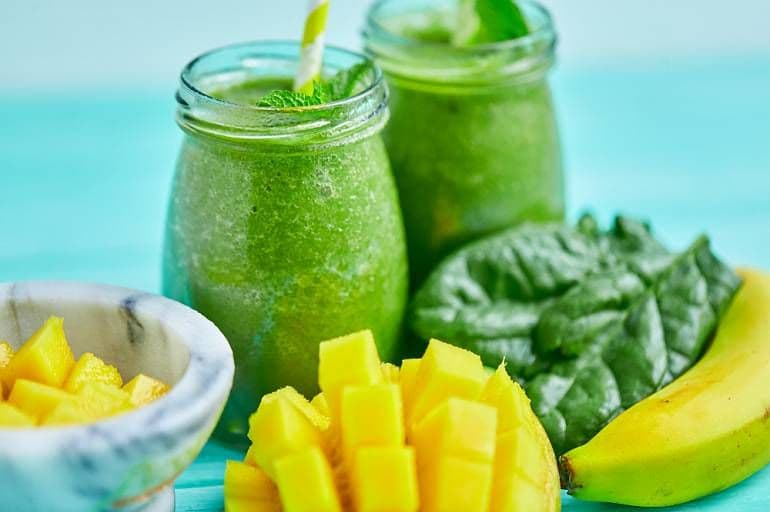
- Рецепт:
- 1. Смешайте все ингредиенты при помощи блендера. Готово! Подавайте сразу.
Слоеные булочки с корицей и медом
| Ингредиенты на 50 г готового блюда | Продукт | Кол-во | Вес |
|---|---|---|---|
| Тесто слоеное, пресное (пшеничная мука) | 41.7 г | 41.7 г | |
| Корица, молотая | 3.5 г | 3.3 г | |
| Сахар, песок | 1.5 г | 1.3 г | |
| Мед, пчелиный | 12.5 г | 12.5 г |
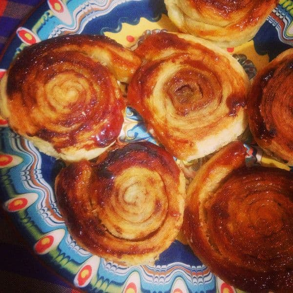
- 1. Положите пласт размороженного слоеного теста на разделочную доску и немного раскатайте, чтобы получился прямоугольник.
- 2. На поверхность теста аккуратно кладем мед и размазываем по всей площади тонким слоем, затем посыпаем молотой корицей и сахаром.
- 3. Скатываем аккуратно тесто в рулет. Разрезаем рулет на одинаковые части.
- 4. Сожмите слегка концы маленьких булочек , чтобы горячий мед не вытек наружу. Кладем булочки вертикально на противень (Перед этим на противень положите пергамент для выпечки).
- 5. Выпекайте при температуре 200 градусов около 20 минут.
- 6. Можно сверху посыпать сахаром, чтобы булочки дополнительно карамелизовались.